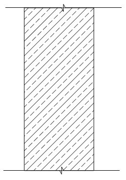
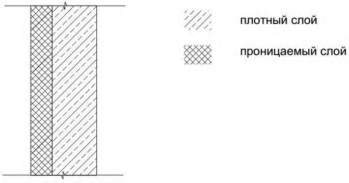

СП 345.1325800.2017 «Здания жилые и общественные. Правила проектирования теплово»
О документе: разработчики, утверждение, регистрация, ключевые слова
СВОД ПРАВИЛ
СП 345.1325800.2017
Издание официальное
МОСКВА 2017
1 ИСПОЛНИТЕЛЬ -Федеральное государственное бюджетное учреждение «Научно-исследовательский институт строительной физики Российской академии архитектуры и строительных наук» (НИИСФ РААСН)
2 ВНЕСЕН Техническим комитетом по стандартизации ТК 465 «Строительство»
3 ПОДГОТОВЛЕН к утверждению Департаментом градостроительной деятельности и архитектуры Министерства строительства и жилищнокоммунального хозяйства Российской Федерации (Минстрой России)
4 УТВЕРЖДЕН Приказом Министерства строительства и жилищнокоммунального хозяйства Российской Федерации от 14 ноября 2017 г. № 1539/пр и введен в действие с 15 мая 2018 г.
5 ЗАРЕГИСТРИРОВАН Федеральным агентством по техническому регулированию и метрологии (Росстандарт)
В случае пересмотра (замены) или отмены настоящего свода правил соответствующее уведомление будет опубликовано в установленном порядке. Соответствующая информация, уведомление и тексты размещаются также в информационной системе общего пользования - на официальном сайте разработчика (Минстрой России) в сети Интернет
© Минстрой России, 2017
Настоящий нормативный документ не может быть полностью или частично воспроизведен, тиражирован и распространен в качестве официального издания на территории Российской Федерации без разрешения Минстроя России
Дата введения - 2018-05-15
Введение
Настоящий свод правил разработан в соответствии с требованиями Федерального закона от 30 декабря 2009 г. № 384-ФЗ «Технический регламент о безопасности зданий и сооружений» и в развитие СП 50.13330.2012.
Настоящий свод правил разработан авторским коллективом Федерального государственного бюджетного учреждения «Научноисследовательский институт строительной физики Российской академии архитектуры и строительных наук» (д-р техн. наук В.Г. Гагарин , канд. техн. наук В.В. Козлов , канд. техн. наук Е.В. Коркина , канд. техн. наук П.П. Пастушков , канд. техн. наук Н.П. Умнякова , канд. техн. наук И.А. Шмаров , инж. А.Ю. Неклюдов , инж. К.С. Андрейцева ) при участии АО ЦНИИЭПжилища (канд. техн. наук В.С. Беляев ), НИУ МГСУ (канд. техн. наук К.И. Лушин ).
1Область применения
Настоящий свод правил распространяется на проектируемые, реконструируемые жилые и общественные здания и устанавливает правила проектирования тепловой защиты.
2Нормативные ссылки
В настоящем своде правил использованы нормативные ссылки на следующие документы:
ГОСТ 7076 -99 Материалы и изделия строительные. Метод определения теплопроводности и термического сопротивления при стационарном тепловом режиме
ГОСТ 24816 -2014 Материалы строительные. Метод определения сорбционной влажности
ГОСТ 24866 -2014. Межгосударственный стандарт. Стеклопакеты клееные. Технические условия.
ГОСТ 25609 -2015 Материалы полимерные рулонные и плиточные для полов. Метод определения показателя теплоусвоения
ГОСТ 25898 -2012 Материалы и изделия строительные. Методы определения паропроницаемости и сопротивления паропроницанию
ГОСТ 26602.4 -2012 Блоки оконные и дверные. Метод определения общего коэффициента пропускания света
ГОСТ 30494 -2011 Здания жилые и общественные. Параметры микроклимата в помещениях
ГОСТ 31167 -2009 Здания и сооружения. Методы определения воздухопроницаемости ограждающих конструкций в натурных условиях
ГОСТ Р 56504 -2015 Материалы строительные. Методы определения коэффициентов влагопроводности
ГОСТ Р 56505 -2015 Материалы строительные. Методы определения показателей капиллярного всасывания воды
ГОСТ Р 56733 -2015 Здания и сооружения. Метод определения удельных потерь теплоты через неоднородности ограждающей конструкции
ГОСТ Р 56734 -2015 Здания и сооружения. Расчет показателя теплозащиты ограждающих конструкций с отражательной теплоизоляцией СП 20.13330.2016 «СНиП 2.01.07-85* Нагрузки и воздействия»
Residential and public buildings. Thermal performance design
- СП 50.13330.2012 «СНиП 23-02-2003 Тепловая защита зданий»
- СП 54.13330.2016 «СНиП 31-01-2003 Здания жилые многоквартирные»
- СП 118.13330.2012 «СНиП 31-06-2009 Общественные здания и сооружения» (с изменениями № 1, № 2)
- СП 131.13330.2012 «СНиП 23-01-99* Строительная климатология» (с изменениями № 1, № 2)
- СП 230.1325800.2015 Конструкции ограждающие зданий. Характеристики теплотехнических неоднородностей
Примечание - При пользовании настоящим сводом правил целесообразно проверить действие ссылочных документов в информационной системе общего пользования -на официальном сайте федерального органа в области стандартизации в сети Интернет или по ежегодному информационному указателю «Национальные стандарты», который опубликован по состоянию на 1 января текущего года, и по выпускам ежемесячного информационного указателя «Национальные стандарты» за текущий год. Если заменен ссылочный документ, на который дана недатированная ссылка, то рекомендуется использовать действующую версию этого документа с учетом всех внесенных в данную версию изменений. Если заменен ссылочный документ, на который дана датированная ссылка, то рекомендуется использовать версию этого документа с указанным выше годом утверждения (принятия). Если после утверждения настоящего стандарта в ссылочный документ, на который дана датированная ссылка, внесено изменение, затрагивающее положение, на которое дана ссылка, то это положение рекомендуется применять без учета данного изменения. Если ссылочный документ отменен без замены, то положение, в котором дана ссылка на него, рекомендуется применять в части, не затрагивающей эту ссылку. Сведения о действии сводов правил целесообразно проверить в Федеральном информационном фонде стандартов.
3Термины и определения
В настоящем своде правил применены термины, приведенные в разделе 3 СП 50.13330.2012.
4Общие положения
При наличии нескольких вариантов проектных решений тепловой защиты зданий следует выбрать тот вариант, который позволяет обеспечить нормативные требования с наименьшими энергетическими и материальными затратами.
- к тепловой защите;
- воздухопроницаемости ограждающих конструкций;
- защите от переувлажнения ограждающих конструкций;
- теплоустойчивости ограждающих конструкций;
- теплоусвоению поверхности полов;
- расходу тепловой энергии на отопление и вентиляцию помещений;
- отдельным элементам зданий.
5Тепловая защита зданий
Требования к тепловой защите зданий устанавливаются в следующем порядке:
- принимаются средняя температура наружного воздуха, С, и продолжительность отопительного периода, сут/год, по СП 131.13330;
- принимается расчетная температура внутреннего воздуха здания по ГОСТ 30494;
- рассчитываются градусо-сутки отопительного периода по формуле (5.2) СП 50.13330.2012;
- находятся базовые значения сопротивления теплопередаче ограждающих конструкций здания тр о R , (м² · o С)/Вт, по таблице 3 СП 50.13330.2012;
- находятся нормируемые значения приведенного сопротивления теплопередаче ограждающих конструкций здания норм о R , (м² · o С)/Вт, по пункту 5.2 СП 50.13330.2012 назначаются коэффициенты m р и с помощью формулы (5.1) СП 50.13330.2012;
- проводится проверка приведенных сопротивлений теплопередаче ограждающих конструкций здания пр о R , (м² ·°С)/Вт;
- проводится проверка удельной теплозащитной характеристики здания об k , Вт/(м³ · о С), по пункту 5.5 СП 50.13330.2012;
- проводится проверка требований к расходу тепловой энергии на отопление и вентиляцию здания по разделу 10 СП 50.13330.2012.
При реализации данных требований к тепловой защите зданий рекомендуется также учитывать положения СП 54.13330 и СП 118.13330.
Расчет приведенного сопротивления теплопередаче фрагмента теплозащитной оболочки здания или выделенной ограждающей конструкции без вентилируемых воздушных прослоек производится в соответствии с приложением Е СП 50.13330.2012.
Теплопроводность материалов принимается в соответствии с приложением Т СП 50.13330.2012 или ГОСТ 7076.
Упрощенный расчет приведенного сопротивления теплопередаче фрагмента теплозащитной оболочки здания или выделенной ограждающей конструкции без вентилируемых воздушных прослоек пр о R , (м² ·°С)/Вт, производится по формуле (Е.1) СП 50.13330.2012. В эту формулу подставляются геометрические характеристики ai , l j , nk , определяемые в соответствии с приложением Е СП 50.13330.2012. Удельные потери теплоты через плоские элементы Ui , Вт/(м² · о С), определяются также в соответствии с приложением Е СП 50.13330.2012. Удельные потери теплоты через линейные j , Вт/(м· о С), и точечные χ k , Вт/ о С, неоднородности принимаются приближенно по таблицам СП 230.1325800.2015 или рассчитываются по ГОСТ Р 56733.
При использовании в ограждающих конструкциях замкнутых воздушных прослоек их необходимо учитывать при расчете сопротивления теплопередаче. Термическое сопротивление замкнутой воздушной прослойки рассчитывается по методике, приведенной в ГОСТ Р 56734. Значения термических сопротивлений замкнутых воздушных прослоек для ряда их толщин приведены в таблице Е.1 СП 50.13330.2012.
Для повышения теплозащитных свойств наружных ограждений используют отражательную теплоизоляцию (алюминиевую фольгу, офольгированные материалы, материалы с низким коэффициентом излучения).
Отражательную теплоизоляцию устанавливают в наружной ограждающей конструкции с устройством воздушной прослойки. Толщина воздушной прослойки должна быть не менее 20-50 мм, но не более 100 мм, высота - не более высоты этажа. Блестящая поверхность офольгированных материалов или поверхность с низким коэффициентом излучения должна быть обращена в сторону воздушной прослойки. При оклейке одной или обеих поверхностей воздушной прослойки алюминиевой фольгой термическое сопротивление следует увеличивать в 2 раза. При этом термическое сопротивление не должно превышать:
- 0,40 м² ·°С/Вт - для воздушной прослойки толщиной 0,02 м;
- 0,45 м² ·°С/Вт - для воздушной прослойки толщиной 0,03 м;
- 0,50 м² ·°С/Вт - для воздушной прослойки толщиной 0,05 м.
Отражательную теплоизоляцию из офольгированных материалов с малым сопротивлением паропроницанию допускается использовать в качестве пароизоляции. В этом случае отражательную теплоизоляцию следует устанавливать в слоях конструкции, расположенных между утеплителем и внутренним воздухом. При этом воздушную прослойку следует рассматривать как дополнительный утеплитель.
Расчет температур на поверхностях и термического сопротивления вертикальной замкнутой воздушной прослойки с отражательной теплоизоляцией или с материалом с низким коэффициентом излучения следует проводить в соответствии с ГОСТ Р 56734.
При расчете термического сопротивления замкнутых воздушных прослоек коэффициент излучения материалов на поверхностях воздушных прослоек следует принимать в соответствии с приложением А настоящего свода правил. Термическое сопротивление замкнутых вертикальных воздушных прослоек с отражательной теплоизоляцией из алюминиевой фольги принимается в соответствии с приложением Т СП 50.13330.2012.
Характерной особенностью навесных фасадных систем (НФС) с вентилируемой воздушной прослойкой является наличие двух типов неоднородностей, зависящих от конструкции фасадной системы и не зависящих. Конструкции НФС и стен в целом проектируются (и монтируются) на разных этапах. Поэтому расчет приведенного сопротивления теплопередаче стен с НФС проводится в два этапа. На промежуточном этапе определяется приведенное сопротивление теплопередаче глухой (без проемов) стены с НФС. На конечном этапе определяется приведенное сопротивление теплопередаче стены в целом.
Приведенное сопротивление теплопередаче глухой (без проемов) стены с НФС пр ф R , (м² ·°С)/Вт, определяется по условному сопротивлению теплопередаче стены и удельным потерям теплоты через элементы крепежной системы НФС, при этом никакие неоднородности, кроме создаваемых подконструкцией системы и крепежом утеплителя, не учитываются. Это сопротивление используется в дальнейшем для расчета воздухообмена в воздушной прослойке НФС 1 в формулах (8.4)-(8.7).
где усл o R - осредненное по площади условное сопротивление теплопередаче фрагмента теплозащитной оболочки здания либо выделенной ограждающей конструкции, м² ∙°С/Вт;
н - удельные потери теплоты через направляющие проникающие в утеплитель (в случае их наличия), Вт/(м·°C); l н - протяженность направляющих, проникающих в утеплитель, м/м² ;
кр - удельные потери теплоты через кронштейны, Вт/°C; n кр - среднее количество кронштейнов, приходящееся на 1 м² стены, 1/м² ;
а - удельные потери теплоты через тарельчатые анкеры с металлическим распорным элементом, Вт/°C, (принимаются по СП 230.1325800 или результатам расчета температурного поля). Влияние тарельчатых анкеров с неметаллическим распорным элементом может не учитываться; n а - среднее количество тарельчатых анкеров с металлическим распорным элементом, приходящееся на 1 м² стены, 1/м² .
При расчете условного сопротивления теплопередаче стены с НФС следует учитывать, что в воздушной прослойке н = 12 Вт/(м² ·°С). После расчета воздухообмена в воздушной прослойке можно заменить н на пр (см. формулу (8.8)).
Приведенное сопротивление теплопередаче стены в целом пр о R , (м² ·°С)/Вт, рассчитывается по формуле
где R н - термическое сопротивление стены от воздушной прослойки до наружного воздуха, (м² С)/Вт; определяется по формуле (8.8) настоящего свода правил.
1 Приведенное сопротивление теплопередаче глухой стены с НФС выполняет вспомогательные функции и не может использоваться для проверки нормативных требований к стене в целом.
В формуле (5.2) при суммировании удельных потерь теплоты не учитывается влияние теплотехнических неоднородностей, создаваемых подконструкцией системы и крепежом утеплителя, учтенных для пр ф R в формуле (5.1).
5.6. Расчет приведенного сопротивления теплопередаче полов
Приведенное сопротивление теплопередаче полов R о , пол , (м² С)/Вт, определяется в соответствии с приложением Е СП 50.13330.2012 и СП 230.1325800.
В разделе 7.2 СП 230.1325800.2015 приводится алгоритм действий для случая, когда имеется некое целевое сопротивление теплопередаче и требуется спроектировать ограждающую конструкцию с близким приведенным сопротивлением теплопередаче.
Здесь приводится алгоритм, содержащий оценочный расчет, позволяющий добиться максимальной точности подбора элементов конструкции для достижения целевого сопротивления теплопередаче.
Первичный подбор элементов проектируемой ограждающей конструкции, для достижения целевого сопротивления теплопередаче, соответствует алгоритму раздела 7.2 СП 230.1325800.2015, но без итераций:
1. Определяется целевое сопротивление теплопередаче ограждающей конструкции здания. Оно должно быть не ниже требуемого СП 50.13330.
2. Выбирается вид ограждающей конструкции.
3. Выбирается типовая разбивка на элементы, которая корректируется с учетом особенностей ограждающей конструкции (для стен типовую разбивку следует принимать по приложению А СП 230.1325800.2015).
4. Для каждого элемента находится удельный геометрический показатель.
5. В случае отсутствия данных по удельным потерям теплоты какого-либо элемента, они устанавливаются путем расчета температурного поля. Для выполнения оценочного расчета допускается использование данных справочных материалов.
6. Для плоских элементов выбирается толщина утеплителя. Для этого целевое сопротивление теплопередаче конструкции умножается на 1,5 и подбирают конструкцию со значением усл ц o1 1,5 R R = .
Примечание - При повторном расчете для конструкций с коэффициентом тепломеханической однородности 0,75 и выше значение коэффициента 1,5 заменяется на 1,3. Для конструкций с коэффициентом тепломеханической однородности 0,6 и ниже значение коэффициента 1,5 заменяется на 1,8.
7. Для выбранной толщины утеплителя определяются удельные потери теплоты всех элементов ограждающей конструкции.
8. По таблице Е.2 и формуле (Е.1) приложения Е СП 50.13330.2012 проводится расчет приведенного сопротивления теплопередаче пр o1 R . 9. Приведенное сопротивление теплопередаче сравнивается с целевым сопротивлением теплопередаче.
По результатам расчета проводится оценка достижения целевого сопротивления теплопередаче.
Примечание - Как правило, целевое сопротивление теплопередаче может считаться достигнутым, если полученное расчетом приведенное сопротивление теплопередаче отличается от целевого сопротивления теплопередаче в большую сторону, не более чем:
Если целевое сопротивление теплопередаче не достигнуто, проводится корректировка.
10. Находится разность полученного приведенного коэффициента теплопередачи и целевого коэффициента теплопередачи.
11. Выбирается элемент, за счет которого будет дорабатываться конструкция. Для выбранного элемента по формулам (5.4)-(5.6) рассчитываются удельные потери теплоты, при которых конструкция обеспечивает целевое сопротивление теплопередаче:
12. Подбирается конструкция выбранного элемента, с удельными потерями теплоты (не превышающими полученное на шаге 11 значение). 13. Для плоского элемента рассчитывается необходимая толщина утеплителя d ут по формуле
где s s R - сумма термических сопротивлений всех слоев конструкции кроме утеплителя.
Если толщина утеплителя была скорректирована более чем на 20 %, следует пересмотреть удельные потери теплоты всех теплотехнических неоднородностей.
14. Проводится окончательный расчет приведенного сопротивления теплопередаче. Для этого заполняется таблица Е.2 и применяется формула (Е.1) приложения Е СП 50.13330.2012.
В случае, если в процессе иных расчетов возникла необходимость в изменении конструкции с целью достижения ею некоего сопротивления теплопередаче, можно использовать ранее проведенные расчеты по СП 50.13330, в частности таблицу, аналогичную таблице Е.2 и начать выполнение выше изложенного алгоритма с шага 10.
Корректировку ограждающей конструкции описанным методом можно проводить как в сторону увеличения, так и в сторону уменьшения приведенного сопротивления теплопередаче.
Удельная теплозащитная характеристика здания рассчитывается в соответствии с приложением Ж СП 50.13330.2012.
В пункте 5.5 СП 50.13330.2012 даны нормируемые значения удельной теплозащитной характеристики здания, а в приложении Ж СП 50.13330.2012 приведена методика расчета его удельной теплозащитной характеристики. В большинстве практических случаев требуется не просто расчет удельной теплозащитной характеристики, а подбор ограждающих конструкций для достижения целевой величины. Не имеет значения, определяется эта целевая величина непосредственно пунктом 5.5 СП 50.13330.2012 или следует из требований к удельному расходу тепловой энергии на отопление и вентиляцию зданий.
Подбор ограждающих конструкций производится аналогично описанному в 5.7 выбору теплозащитных элементов с учетом специфики достигаемой величины.
На начальном этапе ограждающие конструкции выбираются так, чтобы их приведенные сопротивления теплопередаче удовлетворяли требованиям СП 50.13330. Далее выполняется расчет в соответствии с алгоритмом:
1. Определяется целевая удельная теплозащитная характеристика здания. Она должна быть не ниже требуемой по СП 50.13330. 2. Для каждой ограждающей конструкции находится ее площадь и приведенное сопротивление теплопередаче.
3. Проводится расчет удельной теплозащитной характеристики здания в соответствии с приложением Ж СП 50.13330.2012. 4. По результатам расчета проводится оценка достижения целевой удельной теплозащитной характеристики здания.
Если целевая удельная теплозащитная характеристика здания не достигнута, проводится корректировка.
5. Находится разность полученной и целевой удельной теплозащитной характеристики здания по формуле
6. Выбирается ограждающая конструкция, за счет которой будет дорабатываться оболочка здания. Для выбранной ограждающей конструкции рассчитывается приращение коэффициента теплопередаче Δ Ki , которое требуется для обеспечения целевой удельной теплозащитной характеристики здания, по формуле
где V от - отапливаемый объем здания, м³ ;
A ф, i - площадь выбранной ограждающей конструкции, м² ; nt , i - коэффициент, учитывающий отличие внутренней или наружной температуры у конструкции от принятых в расчете ГСОП, определяется по формуле (5.3) СП 50.13330.2012.
7. Проводится корректировка выбранной ограждающей конструкции по алгоритму, описанному в пункте 5.7, начиная с шага 11. 8. Проводится окончательный расчет удельной теплозащитной характеристики здания. Для этого заполняют таблицу Ж.1 приложения Ж СП 50.13330.2012. 3. В случае корректировки оболочки здания за счет нескольких ограждающих конструкций, для использования описанного алгоритма необходимо предварительно решить, в какой пропорции делятся изменения между выбранными ограждающими конструкциями. 4. 5.10 Методика оптимизации теплозащитной оболочки здания по окупаемости энергосберегающих мероприятий
Экономическая оптимизация оболочки здания основана на сравнении альтернативных вариантов конструкций.
Методика содержит три уровня оптимизации:
- 1) выбор оптимальных теплозащитных характеристик отдельных элементов конструкции из условия окупаемости энергосбережения;
- 2) сравнение по эффективности энергосбережения конструкций с различной базовой комплектацией;
- 3) гармонизация отдельных конструкций и оболочки здания в целом. 4. 5.10.1 Выбор оптимальных теплозащитных характеристик отдельных элементов
Данная методика заключается в поиске минимума приведенных затрат. Минимум ищется не дифференцированием, так как функция разрывная, а путем специально организованного перебора вариантов конструкции. В методике учтена зависимость потерь теплоты через ограждающую конструкцию от многих переменных (характеристик элементов, введенных в приложении Е СП 50.13330.2012).
В соответствии с приложением Е СП 50.13330.2012 в качестве теплозащитных характеристик элементов используются условное сопротивление теплопередаче (для плоских элементов) и удельные потери теплоты через неоднородности (для линейных и точечных элементов).
По экономическим и климатическим параметрам района строительства находится удельная прибыль от экономии энергетической единицы 1 пр , соответствующая проекту здания, по формуле
где Степл -тарифная цена тепловой энергии в районе строительства проектируемого здания, руб./(кВт ч);
Сот - удельная цена отопительного оборудования и подключения к тепловой сети в районе строительства проектируемого здания, руб./(кВт ч/год); m кл - климатический коэффициент района строительства, определяемый по формуле
где ГСОП - значение градусо-суток отопительного периода для района строительства, о С сут/год, определяемое по формуле (5.2) СП 50.13330.2012;
ГСОП(Э) - эталонное значение градусо-суток отопительного периода, о С сут/год, принимаемое равным 1000 о С сут/год;
Z ок - срок окупаемости, определяемый как половина срока службы элемента до замены или ремонта, но не более 12 лет.
Требуемый класс теплозащитной эффективности элементов конструкции в зависимости по удельной прибыли от экономии энергетической единицы приведен в таблице 5.1.
Таблица 5.1 Классы теплозащитной эффективности элементов конструкции
| Класс | 1 | 2 | 3 | 4 | 5 | 6 | 7 | 8 | 9 | 10 | 11 | 12 | 13 | 14 |
|---|---|---|---|---|---|---|---|---|---|---|---|---|---|---|
| Границы , руб./(кВт ч/год) включ. | До 2 | От 2 до 4 включ. | От 4 до 8 включ. | От 8 до 14 включ. | От 14 до 24 включ. | От 24 до 40 включ. | От 40 до 65 включ. | От 65 до 100 включ. | От 100 до 160 включ. | От 160 до 250 включ. | От 250 до 380 включ. | От 380 до 570 включ. | От 570 до 850 включ. | От 850 |
Класс теплозащитной эффективности элемента конструкции определяется по удельным единовременным затратам на экономию энергетической единицы , эл, руб./(кВт ч /год), по таблице 5.1.
Удельные единовременные затраты на экономию энергетической единицы элементом конструкции рассчитываются по формулам: для плоского элемента
для линейного элемента
где ΔК ед - разница единовременных затрат вариантов 2 и 1 исследуемого элемента, руб. Для плоского элемента единовременные затраты вычисляются на квадратный метр, для линейного элемента - на погонный метр, для точечного элемента - на 1 шт.
Для использования формул (5.12)-(5.14) должен быть составлен ряд из экономически обоснованных вариантов исследуемого элемента, упорядоченный по его теплозащитной характеристике. В формулах варианты 1 и 2 - соседние варианты ряда (т. е. ближайшие по теплозащитной характеристике, экономически обоснованные варианты элемента). Причем вариант 2 дороже варианта 1 и обладает меньшими теплопотерями. Полученное по формулам (5.12)-(5.14) значение эл соответствует варианту 2 элемента.
Конструкция должна формироваться таким образом, чтобы классы теплозащитной эффективности всех ее элементов были равны требуемому классу теплозащитной эффективности здания. В случае отсутствия варианта элемента с необходимым классом теплозащитной эффективности следует использовать вариант элемента с ближайшим классом теплозащитной эффективности.
Для вариантов конструкции, отличающихся по составу элементов или по базовой (не теплозащитной) части конструкции, более выгодным является вариант с меньшими удельными приведенными затратами.
Удельные приведенные затраты на строительство и эксплуатацию конструкции, П, руб./(м² год), определяются по формуле
для точечного элемента где ед кон К -полные единовременные затраты на производство 1 м² конструкции, руб./м² , которые рассчитываются по формуле
где ai - площадь плоского элемента конструкции i -го вида, приходящаяся на 1 м² конструкции, м² /м² ;
- l j - протяженность линейной неоднородности j -го вида, приходящаяся на 1 м² конструкции, м/м² ; nk - количество точечных неоднородностей k -го вида, приходящихся на 1 м² конструкции, шт./м² ; ед 0 К - базовая стоимость 1 м² конструкции (наиболее холодный вариант всех элементов конструкции), руб./м² .
Гармонично утепленная - ограждающая конструкция, все элементы которой относятся к одному классу теплозащитной эффективности. Этот же класс энергетической эффективности является характеристикой и всей конструкции.
Гармонично утепленная - оболочка здания, состоящая из гармонично утепленных ограждающих конструкций одного класса. Этот же класс теплозащитной эффективности является характеристикой и всей оболочки здания.
Модельный ряд строительных конструкций следует по возможности составлять из гармонично утепленных конструкций. Такие конструкции должны сопровождаться пометкой, указывающей на их гармоничность и класс теплозащитной эффективности. При выборе проектных решений предпочтение должно отдаваться гармонично утепленным конструкциям и оболочкам здания, как наиболее экономически эффективным.
6Теплоустойчивость ограждающих конструкций
6.1Требования к теплоустойчивости ограждающих конструкций
Требования к теплоустойчивости ограждающих конструкций устанавливаются в разделе 6.1 СП 50.13330.2012.
В районах со среднемесячной температурой июля 21 °C и выше расчетная амплитуда колебаний температуры внутренней поверхности ограждающих конструкций (наружных стен и перекрытий / покрытий) A τ, °C, зданий жилых, больничных учреждений (больниц, клиник, стационаров и госпиталей), диспансеров, амбулаторно-поликлинических учреждений, родильных домов, домов ребенка, домов-интернатов для престарелых и инвалидов, детских садов, яслей, яслей-садов (комбинатов) и детских домов, а также производственных зданий, в которых необходимо соблюдать оптимальные параметры температуры и относительной влажности воздуха в рабочей зоне в теплый период года или по условиям технологии поддерживать постоянными температуру или температуру и относительную влажность воздуха, не должна быть более нормируемой амплитуды колебаний температуры внутренней поверхности ограждающей конструкции тр τ A , °С, определяемой по формуле
где t н - средняя месячная температура наружного воздуха за июль, °С, принимаемая по СП 131.13330.
Проверка теплоустойчивости ограждающих конструкций оценивает возможность перегрева помещений в летний период года и предназначена для наиболее теплых регионов.
Расчет теплоустойчивости ограждающей конструкции проводится в соответствии с разделами 6.2-6.8 СП 50.13330.2012. При расчете могут использоваться данные приложения И СП 50.13330.2012.
Амплитуду колебаний температуры внутренней поверхности ограждающих конструкций в A , С, следует определять по формуле
где расч н t A - расчетная амплитуда колебаний температуры наружного воздуха, о С, определяемая согласно пункту 6.3 СП 50.13330.2012; v - величина затухания расчетной амплитуды колебаний температуры наружного воздуха расч н t A в ограждающей конструкции, определяемая согласно пункту 6.4 СП 50.13330.2012.
7Воздухопроницаемость ограждающих конструкций
Требования к воздухопроницаемости ограждающих конструкций устанавливаются в разделе 7.3 СП 50.13330.2012.
Расчет сопротивления воздухопроницаемости ограждающих конструкций проводится в соответствии с пунктами 7.2, 7.4 СП 50.13330.2012. При расчетах могут использоваться данные приложения С СП 50.13330.2012.
В натурных условиях воздухопроницаемость ограждающих конструкций определяется по ГОСТ 31167.
- 7.3. Методика расчета теплотехнических показателей наружных ограждающих конструкций с учетом их воздухопроницаемости
В зданиях, находящихся в условиях эксплуатации при отрицательных температурах наружного воздуха, может происходить фильтрация воздуха через наружные ограждающие конструкции.
При фильтрации холодного воздуха снаружи в помещение (инфильтрации) происходит понижение температуры ограждающих конструкций. При фильтрации воздуха из помещения наружу (эксфильтрации) происходит повышение температуры ограждающих конструкций.
При фильтрации воздуха температурное поле и теплообмен на поверхностях пористого ограждения заметно изменяются в результате переноса теплоты потоком воздуха. Расход воздуха, проникающего через ограждения, достаточно маленький. Воздух двигается по порам и капиллярам медленно (число Рейнольдса соответствует приблизительно 0,05), и его температура во всех сечениях ограждения близка температуре окружающего твердого материала.
Значение температуры внутренней поверхности ограждающей конструкции при фильтрации воздуха может быть рассчитано по формуле
где t в - температура внутреннего воздуха, °C; t н - температура наружного воздуха, °C;
G -расход воздуха, кг/(м² ч); для инфильтрации принимается с положительным знаком, для эксфильтрации - с отрицательным;
R o - сопротивление теплопередаче ограждающей конструкции, (м² °C)/Вт;
R в - сопротивление теплоотдаче внутренней поверхности ограждающей конструкции, (м² °C)/Вт.
- В формуле (7.1) предполагается, что удельная теплоемкость воздуха, равна 1 кДж/(кг °C).
Значение теплового потока, входящего через внутреннюю поверхность конструкции (только за счет теплообмена), рассчитывается по формуле
Значение теплового потока, выходящего через наружную поверхность конструкции (только за счет теплообмена), рассчитывается по формуле
8Защита от переувлажнения ограждающих конструкций
Защита от переувлажнения ограждающих конструкций обеспечивается соблюдением требований к сопротивлению паропроницанию слоев конструкции, расположенных между внутренним воздухом и плоскостью максимального увлажнения. При расчетах значений сопротивления паропроницанию слоев конструкции могут использоваться данные приложения М СП 50.13330.2012.
Требования к защите от переувлажнения ограждающих конструкций установлены в разделе 8 СП 50.13330.2012.
Плоскость максимального увлажнения следует определять по пункту 8.5 СП 50.13330.2012 и таблице 8.1.
Таблица 8.1 Зависимость комплекса f ( t м.у) от температуры в плоскости максимального увлажнения t м.у , С
| t м.у , С | f ( t м.у ), К 2 /Па | t м.у , С | f ( t м.у ), К 2 /Па | t м.у , С | f ( t м.у ), К 2 /Па | t м.у , С | f ( t м.у ), К 2 /Па |
|---|---|---|---|---|---|---|---|
| -40 | 2539 | -23 | 616,9 | -6 | 181,1 | 11 | 62,0 |
| -39 | 2322 | -22 | 571,2 | -5 | 169,3 | 12 | 58,5 |
| -38 | 2126 | -21 | 529,2 | -4 | 158,4 | 13 | 55,2 |
| -37 | 1947 | -20 | 490,7 | -3 | 148,3 | 14 | 52,1 |
| -36 | 1785 | -19 | 455,2 | -2 | 138,9 | 15 | 49,1 |
| -35 | 1638 | -18 | 422,5 | -1 | 130,2 | 16 | 46,4 |
| -34 | 1504 | -17 | 392,5 | 0 | 122,1 | 17 | 43,9 |
| -33 | 1382 | -16 | 364,8 | 1 | 114,5 | 18 | 41,5 |
| -32 | 1271 | -15 | 339,2 | 2 | 107,5 | 19 | 39,2 |
| -31 | 1170 | -14 | 315,6 | 3 | 100,9 | 20 | 37,1 |
| -30 | 1077 | -13 | 293,9 | 4 | 94,8 | 21 | 35,1 |
| -29 | 992,7 | -12 | 273,8 | 5 | 89,1 | 22 | 33,2 |
| -28 | 915,5 | -11 | 255,2 | 6 | 83,8 | 23 | 31,5 |
| -27 | 844,8 | -10 | 238,0 | 7 | 78,8 | 24 | 29,8 |
| -26 | 780,2 | -9 | 222,1 | 8 | 74,2 | 25 | 28,3 |
| -25 | 721,0 | -8 | 207,4 | 9 | 69,9 | 26 | 26,8 |
| -24 | 666,7 | -7 | 193,7 | 10 | 65,8 | 27 | 25,4 |
Допускается находить плоскость максимального увлажнения упрощенным методом, изложенным в настоящем разделе. В соответствии с разделом 8 СП 50.13330.2012 нахождение проводится для климатических параметров, средних за период с отрицательными среднемесячными температурами.
Классификация ограждающих конструкций для расчета влажностного режима проводится по количеству и взаимному расположению слоев конструкции.
Все слои ограждающих конструкций делятся на два типа - проницаемые и плотные. Для такого деления вводится особый критерий, численно равный отношению паропроницаемости материала слоя к его теплопроводности.
Устанавливается следующая граница между проницаемыми и плотными слоями:
1 λ μ - слой проницаемый;
1 λ μ - слой плотный,
-паропроницаемость материала, мг/(м ч Па), определяемая по приложению Т СП 50.13330.2012 или ГОСТ 25898.
Если несколько подряд расположенных слоев оказываются одинаковыми по данной классификации, то для определения, к какому классу принадлежит данная конструкция, их объединяют в один обобщенный проницаемый или плотный слой.
Ограждающие конструкции по количеству и взаимному расположению обобщенных слоев делятся на пять классов. Описание классов приведено в таблице 8.2.
Таблица 8.2 Классификация ограждающих конструкций


Если различие между всеми слоями конструкции не превышает 30 % по критерию λ μ , то ее согласно данной классификации признают однослойной.
Определение места расположения плоскости максимального увлажнения в зависимости от класса конструкции приведено в таблице 8.3.
Таблица 8.3 Определение места расположения плоскости максимального увлажнения
| Класс конструкции | Расположение плоскости максимального увлажнения |
|---|---|
| 1 Однослойная | В наружной половине слоя |
| 2 Двухслойная с плотным слоем со стороны помещения (наружное утепление) | В наружной половине проницаемого слоя |
| 3 Двухслойная с проницаемым слоем со стороны помещения (внутреннее утепление) | На стыке проницаемого и плотного слоев или во внутренней половине плотного слоя |
| 4 Трехслойная с проницаемым слоем в середине | На стыке проницаемого и наружного плотного слоев Примечание - Для внутреннего плотного слоя из легких бетонов или поризованной керамики возможно смещение плоскости максимального увлажнения вглубь проницаемого слоя |
| 5 Трехслойная с плотным слоем в середине | На наружной границе наружного проницаемого слоя Примечание - Для данной конструкции возможно возникновение второй плоскости максимального увлажнения, но ее следует игнорировать |
Рассматриваемые методы защиты от переувлажнения ограждающих конструкций распространяются на рядовые конструкции, увлажняемые напором водяного пара из помещений в отапливаемый период.
В частях конструкций, подвергающихся постоянным воздействиям грунтовой, дождевой или технологической воды, а также с повышенным риском повреждения защитных оболочек (фундаменты, первые и цокольные этажи) рекомендуется применять теплоизоляционные материалы с минимальными показателями эксплуатационной влажности, паропроницаемости (ГОСТ 25898), влагопроводности (ГОСТ Р 56504) и капиллярного всасывания воды (ГОСТ Р 56505), невосприимчивые к воздействию жидкой влаги.
Таблица 8.4 Температура в плоскости максимального увлажнения конструкции в зависимости от климатического и конструкционного факторов
| Конструкционный фактор i о,п μ R | Температура в плоскости максимального увлажнения конструкции | Температура в плоскости максимального увлажнения конструкции | Температура в плоскости максимального увлажнения конструкции | Температура в плоскости максимального увлажнения конструкции | Температура в плоскости максимального увлажнения конструкции | Температура в плоскости максимального увлажнения конструкции | Температура в плоскости максимального увлажнения конструкции | Температура в плоскости максимального увлажнения конструкции |
|---|---|---|---|---|---|---|---|---|
| усл | при значениях климатического фактора | при значениях климатического фактора | при значениях климатического фактора | при значениях климатического фактора | при значениях климатического фактора | при значениях климатического фактора | н,отр в н,отр в е е t t - - | н,отр в н,отр в е е t t - - |
| i о λ R | 0,012 | 0,018 | 0,024 | 0,03 | 0,036 | 0,044 | 0,06 | 0,08 |
| 0,4 | - | - | - | - | - | -0,7 | -5,1 | |
| 0,55 | - | - | - | - | -0,9 | -5,6 | -9,8 | |
| 0,7 | - | - | - | -1,5 | -4,6 | -9,1 | -13,2 | |
| 0,95 | - | - | -3,4 | -6,1 | -9,0 | -13,5 | -17,4 | |
| 1,2 | - | - | -3,5 | -6,8 | -9,5 | -12,4 | -16,7 | -20,5 |
| 1,6 | - | -3,5 | -7,8 | -11,0 | -13,6 | -16,4 | -20,6 | -24,3 |
| 2,0 | -0,7 | -6,8 | -11 | -14,2 | -16,7 | -19,4 | -23,5 | - |
| 2,7 | -5,3 | -11,2 | -15,3 | -18,3 | -20,7 | -23,3 | - | - |
| 3,5 | -9,1 | -14,9 | -18,8 | -21,7 | -24,1 | - | - | - |
| 4,7 | -13,3 | -18,9 | -22,7 | -25,5 | - | - | - | - |
| 6,0 | -16,7 | -22,1 | -25,8 | - | - | - | - | - |
| 7,8 | -20,2 | -25,5 | - | - | - | - | - | - |
| 10,0 | -23,5 | - | - | - | - | - | - | - |
R О,П - общее сопротивление паропроницанию ограждающей конструкции, м² ч Па/мг, определяемое согласно 8.7 СП 50.13330.2012; λ i , μ i - расчетные коэффициенты теплопроводности, Вт/(м² о С), и паропроницаемости, мг/(м ч Па), материала соответствующего слоя; t н,отр - средняя температура наружного воздуха за период с отрицательными среднемесячными температурами, о С; e н,отр - среднее парциальное давление водяного пара наружного воздуха за период с отрицательными среднемесячными температурами, Па; e в - расчетное парциальное давление водяного пара внутреннего воздуха помещений здания, Па;
- t в - расчетная температура внутреннего воздуха помещений здания, о С, по ГОСТ 30494.
Плоскость максимального увлажнения находится упрощенным методом в следующей последовательности:
1. Для все слоев ограждающей конструкции рассчитывается критерий λ μ . 2. В соответствии с 8.3.1 проводится классификация конструкции. 3. По таблице 8.3 определяется слой, где расположена плоскость максимального увлажнения. 4. Рассчитываются климатический и конструкционный факторы, и по таблице 8.4 определяется температура в плоскости максимального увлажнения. 5. По формуле (8.1) определяется x координата плоскости максимального увлажнения, м, отсчитываемая от наружной границы слоя
где λx - расчетный коэффициент теплопроводности, Вт/(м² о С), материала соответствующего слоя;
- x R o - термическое сопротивление от наружного воздуха до наружной границы рассматриваемого слоя, (м² · о С)/Вт, определяемое по формулам (Е.6), (Е.7) приложения Е СП 50.13330.2012.
Если формула (8.1) дает отрицательную координату, то это означает, что плоскость максимального увлажнения расположена на наружной границе слоя.
В навесных фасадных системах с вентилируемой прослойкой движение теплоты, воздуха и влаги в конструкции в значительной мере переплетаются, поэтому чаще всего их нельзя рассматривать в отдельности друг от друга. Важнейшим фактором для оценки удовлетворительности функционирования НФС оказывается подвижность воздуха в воздушной прослойке, которая рассчитывается по формулам (8.2)-(8.13). Приведенное сопротивление теплопередаче глухой стены с НФС рассчитывается по формуле (5.1) настоящего свода правил.
Расчет воздухообмена в воздушной прослойке проводится для средних климатических параметров наиболее холодного месяца.
Движение воздуха в вентилируемой прослойке осуществляется за счет гравитационного (теплового) и ветрового напоров. В случае расположения приточных и вытяжных отверстий на разных стенах скорость движения воздуха в прослойке V пр, м/с, рассчитывается по формуле
где К н , К з - аэродинамические коэффициенты на разных стенах здания, по СП 20.13330;
V н - скорость движения наружного воздуха, м/с;
K - коэффициент учета изменения скорости потока по высоте по СП 20.13330; h - разности высот от входа воздуха в прослойку до его выхода из нее, м; t пр , t н - средняя температура воздуха в прослойке и температура наружного воздуха, °С;
i i ξ - сумма коэффициентов местных сопротивлений, рассчитывается по формуле
где S вх , S вых - площади входного и выходного отверстий, приходящиеся на один погонный метр стены;
S пр - площадь сечения воздушной прослойки, приходящейся на один погонный метр стены;
пр - толщина воздушной прослойки, м.
При расположении приточных и вытяжных отверстий воздушной прослойки на одной стороне здания принимается K н =K з и формула (8.2) упрощается:
В формулах (8.2) и (8.4) используется средняя температура воздуха в прослойке t пр, которая в свою очередь зависит от скорости движения воздуха в прослойке:
н в в пр пр в 0 1 1 R R V c x + = - условная высота, на которой температура воздуха в прослойке отличается от предельной температуры t 0 в е раз ( е 2,7) меньше, чем отличалась при входе в прослойку, м; (8.7) с в - удельная теплоемкость воздуха, равная 1005 Дж/(кг С);
в - средняя плотность воздуха, равная 353/(273+ t пр ) кг/м³ ;
R н - термическое сопротивление стены от воздушной прослойки до наружного воздуха (м² С)/Вт),
где пр - коэффициент теплоотдачи наружной поверхности ограждающей конструкции, Вт/(м² С); принимается по таблице 6 СП 50.13330.2012;
R об - термическое сопротивление облицовочной плитки НФС, (м² С)/Вт.
Для расчета в качестве R в берется приведенное сопротивление теплопередаче глухой стены с НФС пр ф R по формуле (5.1) настоящего свода правил.
Коэффициент теплоотдачи пр равен сумме конвективного и лучистого коэффициентов теплоотдачи пр= к+2 л .
Конвективный коэффициент теплоотдачи к рассчитывается по формуле
Лучистый коэффициент теплоотдачи определяется по формуле
где С 0 - коэффициент излучения абсолютно черного тела, Вт/(м² К 4 ), равный 5,77;
С 1 , С 2 - коэффициент излучения поверхностей, Вт/(м² К 4 ), в случае отсутствия данных по применяемым материалам, принимаются равными 4,4 для минеральной ваты, 5,3 для неметаллической облицовки, 0,5 для облицовки полированным (со стороны прослойки) металлом; m - температурный коэффициент, который рассчитывается по формуле
В процессе расчетов температура прослойки изменяется, а температурный коэффициент изменяется слабо. Поэтому он находится один раз в начале расчетов для температуры t н+1.
Температура и скорость движения воздуха в прослойке находятся методом итераций: по формуле (8.5) определяется средняя температура воздуха в прослойке с коэффициентом теплоотдачи в прослойке пр, затем по формуле (8.2) или (8.4) определяется средняя скорость движения воздуха в прослойке при полученной температуре, по формулам (8.9) и (8.10) пересчитывается коэффициент теплоотдачи в прослойке, по формуле (8.8) пересчитывается термическое сопротивление стены от воздушной прослойки до наружного воздуха, по формуле (8.5) определяется средняя температура воздуха в прослойке для скорости движения воздуха в прослойке, полученной на предыдущем шаге и т. д. На первом шаге средняя скорость движения воздуха в прослойке принимается равной 0 м/с. Шаги итерации продолжаются, пока разница между скоростями воздуха на соседних шагах не станет меньше 10 %.
В результате расчета находятся температура и скорость движения воздуха в прослойке, а также коэффициент теплоотдачи в прослойке пр .
Допускается находить приближенную скорость движения воздуха в прослойке пр ~ V , м/с, без итераций по формуле
В этом случае допускается пр принимать равным 12 Вт/(м² °C). Средняя температура воздуха в прослойке рассчитывается также по формуле (8.5).
Использовать формулу (8.12) и упрощенный подход допускается только при выполнении условия:
В случае невыполнения условия (8.13) или, при необходимости более точных расчетов, формулу (8.12) можно использовать для нахождения стартовой скорости для выполнения процесса итераций, описанного выше.
Для определения таких характеристик конструкции, как долговечность и расчетная теплопроводность, рассчитывают влажностный режим конструкции в многолетнем цикле эксплуатации (нестационарный влажностный режим) с применением специализированного программного комплекса. В наружных граничных условиях учитывают сопротивление паропроницанию ветрозащиты и наружной облицовки, а также воздухообмен в воздушной прослойке.
Результатом расчета является распределение влажности по толщине конструкции в любой момент времени ее эксплуатации, по которому определяют эксплуатационную влажность материалов конструкции.
По результатам расчета влажностного режима конструкции в многолетнем цикле эксплуатации проверяется соблюдение двух требований к конструкции:
- 1) максимальная влажность утеплителя не должна превышать критической величины, которую принимают равной сумме w Б - расчетной влажности материала для условий эксплуатации Б для применяемого утеплителя и w ср - предельно допустимого приращения влажности материала по таблице 10 СП 50.13330.2012;
- 2) средняя влажность утеплителя и основания в месяц наибольшего увлажнения не должна превышать расчетную влажность материала для условий эксплуатации.
Если для какого-либо из слоев конструкции требования к влажностному режиму стены не выполняются, рекомендуется усиливать внутреннюю штукатурку, или увеличивать воздухообмен в воздушной прослойке, или уменьшать сопротивление паропроницанию ветрозащиты.
Дополнительным результатом расчета нестационарного влажностного режима является величина потока водяного пара из конструкции в воздушную прослойку q п в, мг/(ч м² ), в наиболее холодный месяц.
По потоку водяного пара рассчитывается коэффициент k , мг/(м² ч Па), используемый в дальнейших расчетах:
Допускается рассчитывать коэффициент k по приближенной формуле
где R о п - полное сопротивление паропроницанию стены, м² ч Па/мг;
R ут+ п - сопротивление паропроницанию слоев от основания до воздушной прослойки, м² ч Па/мг; (в общем случае это сумма сопротивлений паропроницанию слоев пароизоляции, утеплителя, ветрозащиты и сопротивления влагообмену в воздушной прослойке, который приближенно принимается равным 0,02 м² ч Па/мг);
где w - значение производной кривой сорбции, определяемой по ГОСТ
24816; для материала основания стены при = 50 %;
ос - паропроницаемость материала основания, мг/(м ч Па);
ос - плотность материала основания, кг/м³ ;
E ос - давление насыщенного водяного пара при средней температуре основания в расчетных условиях (для средней температуры наиболее холодного месяца).
Давление водяного пара в воздушной прослойке определяется балансом пришедшей из конструкции в прослойку и ушедшей из прослойки наружу влаги. Расчет проводится для наиболее холодного месяца. Парциальное давление водяного пара в воздушной прослойке e пр, Па, находится из уравнения баланса:
где 1 эк в п эк н 1 + + = п R k е k R е е - предельное парциальное давление водяного пара в прослойке, Па;
1 22100 эк п эк в пр пр 1 + = п k R R V x - условная высота падения парциального давления водяного пара, м; e н - парциальное давление водяного пара наружного воздуха, Па;
R эк п - сопротивление паропроницанию облицовки фасада, м² ч Па/мг; k - коэффициент, определяемый по формуле (8.14) или (8.15).
Величина e пр сравнивается с величиной давления насыщенного водяного пара при температуре воздуха, равной t н , и если e пр >E н, то принимаются меры по улучшению влажностного режима воздушной прослойки: увеличивается ширина воздушной прослойки, уменьшается высота непрерывной воздушной прослойки (устанавливаются рассечки вентилируемой прослойки), увеличивается ширина зазора между плитками облицовки.
В случае разделения вентилируемой прослойки рассечками следует предусмотреть продухи для выхода воздуха из нижней части прослойки и забора воздуха в верхнюю часть прослойки. По возможности следует препятствовать смешиванию выбрасываемого и забираемого воздуха.
Требуемая воздухопроницаемость стены с облицовкой на относе G тр , кг/(м² ч), рассчитывается по формуле
где - параметр, приведенный в таблице 8.5;
R о п - полное сопротивление паропроницанию стены, м² ч Па/мг.
Таблица 8.5 Значения параметра , для различных значений параметров D и
| D | 0,005 | 0,01 | 0,015 | 0,02 | 0,03 | 0,04 | 0,06 | 0,08 | 0,1 | 0,12 |
|---|---|---|---|---|---|---|---|---|---|---|
| 0,02 | 3,96 | 1,61 | 0,62 | |||||||
| 0,04 | 8,16 | 4 | 2,5 | 1,64 | 0,63 | |||||
| 0,06 | 6,17 | 4,05 | 2,92 | 1,66 | 0,92 | |||||
| 0,08 | 16,7 | 5,54 | 4,1 | 2,55 | 1,68 | 0,65 | ||||
| 0,1 | 10,5 | 5,24 | 3,39 | 2,38 | 1,22 | 0,51 | ||||
| 0,12 | 25,6 | 8,52 | 4,19 | 3,03 | 1,73 | 0,96 | 0,42 | |||
| 0,14 | 15,1 | 7,54 | 3,67 | 2,22 | 1,39 | 0,81 | ||||
| 0,16 | 34,9 | 11,6 | 5,8 | 2,69 | 1,79 | 1,17 | 0,7 | |||
| 0,18 | 19,8 | 9,92 | 4,92 | 2,17 | 1,51 | 1,02 |
| 0,2 | 44,6 | 14,9 | 7,43 | 3,61 | 1,84 | 1,32 |
Параметр D рассчитывается по формуле
где Е у - давление насыщенного водяного пара на границе между утеплителем и вентилируемой воздушной прослойкой, Па.
Параметр рассчитывается по формуле
где R н п - сопротивление влагообмену на наружной границе ограждающей конструкции, м² ч Па/мг, рассчитывается по формуле
Полное сопротивление паропроницанию стены определяется как сумма сопротивлений паропроницанию всех слоев конструкции плюс сопротивления влагообмену на наружной и внутренней границах стены.
Воздухопроницаемость конструкции не должна превышать требуемую. Воздухопроницаемость конструкции определяется в соответствии с разделом 7 СП 50.13330.2012 для условий наиболее холодного месяца.
Для фасадов с тонким штукатурным слоем при проверке защиты от переувлажнения допускается заменять методику, изложенную в разделе 8 СП 50.13330.2012, методикой, изложенной в данном подразделе.
Проверка проводится для климатических параметров, средних за период с отрицательными среднемесячными температурами.
Сопротивление паропроницанию наружного штукатурного слоя п шт R , м² ч Па/мг, должно удовлетворять условию:
где w , ос , ос , E ос - то же, что и в формуле (8.16).
Наличие неорганических гигроскопических солей в материале наружных ограждающих конструкций зданий вызывает понижение парциального давления насыщенного водяного пара над растворами солей в поровом пространстве стенового материала.
Тогда в формулах (8.1)-(8.3) СП 50.13330.2012 вместо значения Е в следует принимать Е р i (при наличии одной соли) и Е р (при наличии смеси солей), вместо в - принимать в с , где Е р i , Е р - парциальное давление водяного пара, соответственно, над насыщенным раствором соли и смеси солей, Па, при температуре внутреннего воздуха t в;
в с - относительная влажность внутреннего воздуха, %, с учетом наличия солей, рассчитываемая по формуле
где в - относительная влажность внутреннего воздуха, %, в отсутствии солей;
р - относительная влажность воздуха, %, над насыщенным водным раствором соли.
При превышении значением в с , вычисленным по формуле (8.23), 100 % его следует принимать равным 100 %.
При содержании в материале ограждающей конструкции одной соли значения Е р i и φр принимаются по интерполяции данных таблицы 8.6.
Таблица 8.6 Парциальное давление водяного пара Е р i , Па, и относительная влажность воздуха φр, %, над насыщенными растворами отдельных солей при давлении В =100,7 кПа
| Химическая формула вещества | Парциальное давление водяного пара, Е р i , Па, при температуре t , °С | Парциальное давление водяного пара, Е р i , Па, при температуре t , °С | Парциальное давление водяного пара, Е р i , Па, при температуре t , °С | Парциальное давление водяного пара, Е р i , Па, при температуре t , °С | Парциальное давление водяного пара, Е р i , Па, при температуре t , °С | Относительная влажность над насыщенным раствором соли φ р , %, при температуре t , °С | Относительная влажность над насыщенным раствором соли φ р , %, при температуре t , °С | Относительная влажность над насыщенным раствором соли φ р , %, при температуре t , °С | Относительная влажность над насыщенным раствором соли φ р , %, при температуре t , °С | Относительная влажность над насыщенным раствором соли φ р , %, при температуре t , °С |
|---|---|---|---|---|---|---|---|---|---|---|
| Химическая формула вещества | 10 | 15 | 20 | 25 | 30 | 10 | 15 | 20 | 25 | 30 |
| ZnBr 2 | - | - | 230,6 | 286,6 | 305,3 | - | - | 9,9 | 9,0 | 7,2 |
| MgCl 2 | - | - | - | - | 1400 | - | - | - | - | 33,0 |
| Na 2 S 2 O 3 | 548 | 761,3 | 1051 | 1451 | 1895 | 44,6 | 44,7 | 45,0 | 45,8 | 44,6 |
| Mg(NO 3 ) 2 | - | - | 1261 | 1659 | 2169 | - | - | 53,9 | 52,4 | 51,1 |
| Ca(NO 3 ) 2 | 746,6 | 954,6 | 1288 | 1605 | 2005 | 60,8 | 56,0 | 55,1 | 50,7 | 47,2 |
| NaBr | - | 959,9 | 1400 | 1787 | 2240 | - | 56,3 | 60,0 | 56,4 | 52,8 |
| NН 4 NО 3 | 917,3 | 1193 | 1566 | 1992 | 2524 | 74,7 | 70,0 | 67,0 | 62,9 | 59,4 |
| NaNO 3 | 950,6 | 1313 | 1804 | 2364 | 3076 | 77,4 | 77,0 | 77,2 | 74,6 | 72,4 |
| NaCI | 923,6 | 1279 | 1807 | 2381 | 3253 | 75,2 | 75,0 | 77,3 | 75,2 | 76,6 |
| NH 4 Cl | 969,3 | 1353 | 1856 | 2416 | 3281 | 78,9 | 79,4 | 79,4 | 76,3 | 77,3 |
| Ca(NH 2 ) 2 | 997,2 | 1365 | 1873 | 2408 | 3078 | 81,2 | 80,1 | 80,1 | 76,0 | 72,5 |
|---|---|---|---|---|---|---|---|---|---|---|
| (NH 4 ) 2 SO 4 | 971,9 | 1355 | 1896 | 2600 | 3362 | 79,1 | 79,5 | 81,1 | 82,1 | 79,2 |
| Na 2 SO 4 | 909,3 | 1333 | 1927 | 2748 | 3633 | 74,0 | 78,2 | 82,4 | 86,7 | 85,6 |
| KCl | 1055 | 1445 | 1968 | 2636 | 3733 | 85,9 | 84,8 | 84,2 | 83,2 | 87,9 |
| NaSО 3 | 1075 | 1487 | 2038 | 2762 | 3706 | 87,5 | 87,2 | 87,2 | 87,2 | 87,3 |
| CdSO 4 | 1099 | 1511 | 2077 | 2812 | 3768 | 89,5 | 88,6 | 88,8 | 88,8 | 88,7 |
| Na 2 CO 3 | - | 1601 | 2090 | 2704 | 3465 | - | 93,9 | 89,4 | 85,4 | 81,6 |
| CdBr 2 | - | - | 2120 | 2820 | 3678 | - | - | 90,7 | 89,0 | 86,6 |
| ZnSO 4 | 1189 | 1597 | 2126 | 2802 | 3661 | 96,8 | 93,7 | 90,9 | 88,4 | 86,2 |
| NH 4 H 2 PO 4 | 1192 | 1658 | 2146 | 2921 | 3890 | 97,1 | 97,2 | 91,8 | 92,2 | 91,6 |
| KNO 3 | 1183 | 1635 | 2161 | 2925 | 3845 | 96,3 | 95,9 | 92,4 | 92,3 | 90,6 |
| СаН 4 (РО 4 ) 2 | 1193 | 1689 | 2202 | 3052 | 3980 | 97,1 | 99,1 | 94,2 | 96,3 | 93,7 |
| KH 2 PO 4 | 1195 | 1683 | 2251 | 3034 | 3946 | 97,3 | 98,7 | 96,3 | 95,8 | 92,9 |
| MgSO 4 | - | - | - | - | 4000 | - | - | - | - | 94,2 |
| K 2 SO 4 | 1208 | 1701 | 2306 | 3141 | 4112 | 98,4 | 99,8 | 98,6 | 99,2 | 96,8 |
При наличии в материале наружных ограждающих конструкций солей, образующих разные виды кристаллогидратов одной соли при данной температуре, над раствором смеси кристаллогидратов давление Е р принимается равным давлению Е р i над раствором кристаллогидрата с наибольшим количеством молекул воды.
Для солей, которые не образуют кристаллогидраты, давление пара изотермически инвариантных смешанных растворов и смешанных растворов, насыщенных хотя бы одним компонентом или близких к насыщению, Ер рассчитывается по формуле
где сi - концентрация i -й соли в растворе смеси солей, масс.%; i C H2O -содержание воды в насыщенном растворе i -й соли, масс.%; н i c - концентрация i -й соли в насыщенном растворе i -й соли, масс.%;
H2O С - содержание воды в растворе смеси солей, масс.%.
Значения н i c , i C H2O принимаются по справочникам растворимости водносолевых систем. Значения сi и H2O С принимаются по результатам исследований материала наружных ограждающих конструкций. Значения Е р и φр для многокомпонентных растворов NaCl+K2SO4+KCl и NaCl+Na2SO4 принимаются по таблице 8.7, при наличии смесей других солей - по справочникам растворимости многокомпонентных систем.
Таблица 8.7 Парциальное давление водяного пара Е р, Па, и относительная влажность воздуха φр, %, над насыщенными растворами смесей солей при давлении В = 100,7 кПа
| Состав смеси солей | Состав смеси солей | Состав смеси солей | Состав смеси солей | |
|---|---|---|---|---|
| t , о C | NaCl + K 2 SO 4 + KCl | NaCl + K 2 SO 4 + KCl | NaCl + Na 2 SO 4 | NaCl + Na 2 SO 4 |
| E p , Па | φ р ,% | E p , Па | φ р ,% | |
| 10 | 908,0 | 73,9 | 896,2 | 70,78 |
| 15 | 1277,9 | 75,0 | 1131,3 | 66,35 |
|---|---|---|---|---|
| 20 | 1778,6 | 76,1 | 1637,8 | 70,05 |
| 25 | 2353,1 | 74,3 | 2449, 8 | 77,33 |
| 30 | 3155,3 | 74,3 | 3344,5 | 78,77 |
9Теплоусвоение поверхности полов
Требования к теплоусвоению поверхности полов устанавливаются в разделе 9.1 СП 50.13330.2012
Согласно данному разделу поверхность пола жилых и общественных зданий, вспомогательных зданий и помещений промышленных предприятий и отапливаемых помещений производственных зданий (на участках с постоянными рабочими местами) должна иметь расчетный показатель теплоусвоения пол Y , Вт/(м² °C), не более нормируемой величины тр пол Y , приведенной в таблице 12 СП 50.13330.2012.
9.2Расчет теплоусвоения поверхности полов
Методические указания по расчету теплоусвоения поверхности полов приведены в разделе 9.2 СП 50.13330.2012.
Согласно данному разделу расчетная величина показателя теплоусвоения поверхности пола пол Y , Вт/(м² °C), определяется следующим образом:
- а) если покрытие пола (первый слой конструкции пола) имеет тепловую инерцию D 1 = R 1 s 1 0,5, то показатель теплоусвоения поверхности пола следует определять по формуле:
- б) если первые n слоев конструкции пола ( n 1) имеют суммарную тепловую инерцию D 1 + D 2 + ... + Dn < 0,5, но тепловая инерция ( n + 1) слоев D 1 + D 2 + ... + Dn +l 0,5, то показатель теплоусвоения поверхности пола Y пол следует определять последовательно расчетом показателей теплоусвоения поверхностей слоев конструкции, начиная с n -го до 1-го: для n -го слоя - по формуле
n
- 2; ...; 1) - по формуле
Показатель теплоусвоения поверхности пола Y пол принимается равным показателю теплоусвоения поверхности 1-го слоя Y 1 .
Для полимерных рулонных и плиточных материалов показатель теплоусвоения определяется по ГОСТ 25609.
10Расход тепловой энергии на отопление и вентиляцию зданий
Требования к расходу тепловой энергии на отопление и вентиляцию зданий установлены в разделе 10 СП 50.13330.2012.
- го слоя ( i
=
- 1; n энергии на отопление и вентиляцию зданий
Методика расчета удельной характеристики расхода тепловой энергии на отопление и вентиляцию жилых и общественных зданий представлена в приложении Г СП 50.13330.2012.
Удельная характеристика теплопоступлений в здание от проникающей солнечной радиации рад k , Вт/(м³ · о С), за отопительный период рассчитывается в соответствии с приложением Г СП 50.13330.2012 по формуле
где V от - отапливаемый объем здания, м³ ;
ГСОП -значение градусо-суток отопительного периода для района строительства, о С сут/год, определяемое по формуле (5.2) СП 50.13330;
ОП рад Q -суммарные теплопоступления через окна, расположенные на фасадах, ориентированных по направлениям j , и фонари от солнечной радиации в течение отопительного периода, МДж/год, вычисляются по формуле
где вер j I - суммарная радиация за отопительный период для вертикальной поверхности, ориентированной по направлению j , МДж/год·м² ; принимается по климатологическим справочным данным; гор I - суммарная радиация за отопительный период для горизонтальной поверхности, МДж/год·м² ; принимается по климатологическим справочным данным; jl A , фон A - площадь окон, ориентированных по направлению j , и зенитных фонарей, соответственно, м² ; jl g , фон g - коэффициенты общего пропускания солнечной энергии для окон ( l
- индекс окна) ориентированных по направлению j , и зенитных фонарей, соответственно, определяемые как сумма коэффициента прямого пропускания солнечной энергии и коэффициента вторичной теплопередачи внутрь помещения, отн. ед., определяемые экспериментально или по приложению Б настоящего свода правил; jl 2 τ , 2фон - коэффициенты, учитывающие затенение светового проема окон и зенитных фонарей, непрозрачными элементами заполнения, отн. ед., рассчитываемые по формуле (см. ГОСТ 26602.4)
где / l - индекс l / -й ячейки переплета, отн. ед.; для переплета прямоугольной формы ) ( / 2 / / / / / / l l l l l l b a d a b + = , для переплета круглой формы / / / / l l l d r = ; / l d - толщина l / -й ячейки переплета, м;
/ l r - радиус ячейки переплета, м;
0 A - площадь оконного блока по наружному обмеру, м² ;
/ / / l l l b a A = - площадь l / -й ячейки в свету, м² ;
/ l a , / l b - ширина и высота l / -й ячейки в свету, м;
/ ρ l - коэффициент диффузного отражения внутренних граней l / -й ячейки, отн. ед.;
L / - общее количество светопрозрачных ячеек в оконном блоке;
/ Г l K -составляющая коэффициента светопередачи, зависящая от геометрических размеров ячейки переплета.
Суммарная (прямая плюс рассеянная) солнечная радиация на горизонтальную поверхность (покрытие, зенитные фонари) гор I , МДж/год·м² , при действительных условиях облачности за отопительный период для климатического района строительства рассчитывается по формуле
где гор i I - суммарная солнечная радиация на горизонтальную поверхность при действительных условиях облачности для i -го месяца отопительного периода, МДж/год·м² ; m -число месяцев отопительного периода со среднесуточной температурой наружного воздуха, равной и ниже 8 °С, по СП 131.13330.
Суммарная (прямая, рассеянная и отраженная) солнечная радиация на вертикальную поверхность (стены и окна) вер j I , МДж/год·м² , при действительных условиях облачности за отопительный период рассчитывается по формуле
где вер ji S - прямая солнечная радиация на вертикальную поверхность при действительных условиях облачности в i -м месяце отопительного периода для j-й ориентации, МДж/м² ; вер i D , вер i R - рассеянная и отраженная солнечная радиация на вертикальную поверхность при действительных условиях облачности в i -м месяце отопительного периода, МДж/м² ; гор i S , гор i D - прямая и рассеянная солнечная радиация на горизонтальную поверхность при действительных условиях облачности в i -м месяце отопительного периода, МДж/м² , принимается по климатологическим справочным данным; m - то же, что и в формуле (10.5); k i A - альбедо поверхности земли в i -м месяце отопительного периода, %, принимается по климатологическим справочным данным; ji K ГВ -коэффициент пересчета прямой солнечной радиации с горизонтальной поверхности на вертикальную i -го месяца отопительного периода для j -й ориентации, принимается по данным приложения В настоящего свода правил.
Отапливаемую площадь здания A от, м² , следует определять как площадь этажей (в том числе мансардного, отапливаемого цокольного и подвального) здания, измеряемую в пределах внутренних поверхностей наружных стен, включая площадь, занимаемую перегородками и внутренними стенами. При этом площадь лестничных клеток и лифтовых шахт включается в площадь этажа.
В отапливаемую площадь здания не включаются площади теплых чердаков и подвалов, неотапливаемых технических этажей, подвала (подполья), холодных неотапливаемых веранд, неотапливаемых лестничных клеток, а также холодного чердака или его части, не занятой под мансарду.
При определении площади мансардного этажа учитывается площадь с высотой до наклонного потолка 1,2 м при наклоне 30° к горизонту; 0,8 м - при 45°-60°; при 60° и более - площадь измеряется до плинтуса.
Площадь жилых помещений здания A ж, м² , рассчитывается как сумма площадей всех общих комнат (гостиных) и спален.
Отапливаемый объем здания V от , м³ , рассчитывается как произведение отапливаемой площади этажа на внутреннюю высоту, измеряемую от поверхности пола первого этажа до поверхности потолка последнего этажа.
При сложных формах внутреннего объема здания отапливаемый объем определяется как объем пространства, ограниченного внутренними поверхностями наружных ограждений (стен, покрытия или чердачного перекрытия, цокольного перекрытия).
Площадь наружных ограждающих конструкций A н сум , м² , рассчитывается по внутренним размерам здания. Общая площадь наружных стен (с учетом оконных и дверных проемов) рассчитывается как произведение периметра наружных стен по внутренней поверхности на внутреннюю высоту здания, измеряемую от поверхности пола первого этажа до поверхности потолка последнего этажа с учетом площади оконных и дверных откосов глубиной от внутренней поверхности стены до внутренней поверхности оконного или дверного блока. Суммарная площадь окон определяется по размерам проемов в свету. Площадь наружных стен (непрозрачной части) рассчитывается как разность общей площади наружных стен и площади окон и наружных дверей.
Площадь горизонтальных наружных ограждений (покрытия, чердачного и цокольного перекрытий) рассчитывается как площадь этажа здания (в пределах внутренних поверхностей наружных стен).
При наклонных поверхностях потолков последнего этажа площадь покрытия, чердачного перекрытия определяется как площадь внутренней поверхности потолка.
Форма энергетического паспорта проекта здания представлена в приложении Д СП 50.13330.2012.
11Теплофизические расчеты отдельных элементов зданий
где тр о R - нормируемое сопротивление теплопередаче покрытия, определяемое по формуле (5.1) СП 50.13330.2012 в зависимости от градусосуток отопительного периода климатического района строительства; nt - коэффициент, определяемый по формуле (5.3) СП 50.13330.2012, которая применительно к теплому чердаку имеет вид:
где t в - расчетная температура внутреннего воздуха помещений верхнего этажа, °С; t н расчетная температура наружного воздуха, °С; черд в t - расчетная температура воздуха в чердаке, °С; для расчета теплового баланса для 6-8-этажных зданий - 14 °С, для 9-12-этажных зданий 15-16 °С, для 14-17-этажных зданий - 17-18 °С. Для зданий ниже 6 этажей чердак, как правило, выполняют холодным, а вытяжные каналы из каждой квартиры выводят на кровлю.
где t в , черд в t - то же, что и в (11.2); пр о,черд.т R - приведенное сопротивление перекрытия, превышающее требуемое по формуле (11.1), (м² ·°С)/Вт;
в - коэффициент теплоотдачи поверхности перекрытия в помещении, Вт/(м² ·°С);
t н - нормируемый температурный перепад, принимаемый согласно СП 50.13330.2012 равным 3 °С.
Если условие t t н не выполняется, то следует увеличить сопротивление теплопередаче перекрытия пр о,черд.т R до значения, обеспечивающего это условие.
где t в , t н , черд в t - то же, что и в (11.2);
G вент - приведенный (отнесенный к 1 м² пола чердака) расход воздуха в системе вентиляции, кг/(м² ·ч), определяемый по таблице 11.1; с - удельная теплоемкость воздуха, равная 1 кДж/(кг·°С); t вент - температура воздуха, выходящего из вентиляционных каналов, принимаемая равной t в + 1,5, °С; тр о,черд.т R - требуемое сопротивление теплопередаче чердачного перекрытия теплого чердака, (м² ·°С)/Вт, устанавливаемое согласно СП 50.13330; норм о,черд.ст R - нормируемое сопротивление теплопередаче наружных стен теплого чердака, (м² ·°С)/Вт, определяемое согласно 11.1.4; q тр ,i - линейная плотность теплового потока через поверхность теплоизоляции, приходящаяся на 1 м длины трубопровода i -го диаметра с учетом теплопотерь через изолированные опоры, фланцевые соединения и арматуру, Вт/м; для чердаков и подвалов значения qpi приведены в таблице 11.2; l тр ,i - длина трубопровода i -го диаметра, м, принимается по проекту; a черд.ст - приведенная (отнесенная к 1 м² пола чердака) площадь наружных стен теплого чердака, м² /м² , определяемая по формуле
где A черд.ст - площадь наружных стен чердака, м² ;
A черд.т - площадь перекрытия теплого чердака, м² .
Таблица 11.1 Приведенный расход воздуха в системе вентиляции
| Этажность | Приведенный расход воздуха G вент , кг/(м² ·ч), при наличии в квартирах | Приведенный расход воздуха G вент , кг/(м² ·ч), при наличии в квартирах |
|---|---|---|
| здания | газовых плит | электроплит |
| 5 | 12 | 9,6 |
| 9 | 19,5 | 15,6 |
| 12 | - | 20,4 |
| 16 | - | 26,4 |
| 22 | - | 35,2 |
| 25 | 39,5 |
Таблица 11.2 Нормируемая плотность теплового потока через поверхность теплоизоляции трубопроводов на чердаках и в подвалах
| Средняя температура теплоносителя, °С | Средняя температура теплоносителя, °С | Средняя температура теплоносителя, °С | Средняя температура теплоносителя, °С | Средняя температура теплоносителя, °С | |
|---|---|---|---|---|---|
| Условный диаметр трубопровода, мм | 60 | 70 | 95 | 105 | 125 |
| Линейная плотность теплового потока q тр,i , Вт/м | Линейная плотность теплового потока q тр,i , Вт/м | Линейная плотность теплового потока q тр,i , Вт/м | Линейная плотность теплового потока q тр,i , Вт/м | Линейная плотность теплового потока q тр,i , Вт/м | |
| 10 | 7,7 | 9,4 | 13,6 | 15,1 | 18 |
| 15 | 9,1 | 11 | 15,8 | 17,8 | 21,6 |
| 20 | 10,6 | 12,7 | 18,1 | 20,4 | 25,2 |
| 25 | 12 | 14,4 | 20,4 | 22,8 | 27,6 |
| 32 | 13,3 | 15,8 | 22,2 | 24,7 | 30 |
| 40 | 14,6 | 17,3 | 23,9 | 26,6 | 32,4 |
| 50 | 14,9 | 17,7 | 25 | 28 | 34,2 |
| 70 | 17 | 20,3 | 28,3 | 31,7 | 38,4 |
| 80 | 19,2 | 22,8 | 31,8 | 35,4 | 42,6 |
| 100 | 20,9 | 25 | 35,2 | 39,2 | 47,4 |
| 125 | 24,7 | 29 | 39,8 | 44,2 | 52,8 |
| 150 | 27,6 | 32,4 | 44,4 | 49,1 | 58,2 |
Примечание - Плотность теплового потока в таблице определена при средней температуре окружающего воздуха 18 °С. При меньшей температуре воздуха плотность теплового потока возрастает с учетом следующей зависимости
где q 18 - линейная плотность теплового потока по таблице 11.2;
- температура теплоносителя, циркулирующего в трубопроводе при расчетных условиях, о С; tT t - температура воздуха в помещении, где проложен трубопровод, о С.
где черд в t , t н - то же, что и в формуле (11.2); черд в α - коэффициент теплоотдачи внутренней поверхности наружного ограждения теплого чердака, Вт/(м² ·°С), принимаемый для стен 8,7; для покрытий 7-9-этажных домов - 9,9; 10-12-этажных - 10,5; 13-16-этажных - 12 Вт/(м² ·°С);
R o - приведенное сопротивление теплопередаче наружных стен пр о,черд.ст R , перекрытий пр о,черд.перек р. R и покрытий пр о,черд.покр. R теплого чердака, (м² ·°С)/Вт.
Температура точки росы t р вычисляется следующим образом:
- а) рассчитывается влагосодержание воздуха чердака f
- черд по формуле , (11.8) где f н - влагосодержание наружного воздуха, г/м³ , при расчетной температуре t н, рассчитываемое по формуле
где е н - среднее за январь парциальное давление водяного пара, Па, определяемое согласно СП 131.13330;
f - приращение влагосодержания за счет поступления влаги с воздухом из вентиляционных каналов, г/м³ , принимается: для домов с газовыми плитами - 4,0 г/м³ , для домов с электроплитами - 3,6 г/м³ ;
- б) рассчитывается парциальное давление водяного пара воздуха в теплом чердаке е черд, Па, по формуле
- в) по таблицам парциального давления насыщенного водяного пара определяется температура точки росы t р по значению Е = е черд .
Полученное значение t р должно удовлетворять условию t р < ч.в τ (стен стен ч.в τ , перекрытий перекр ч.в τ и покрытий покр ч.в τ ).
где тр о R -нормируемое сопротивление теплопередаче перекрытий над техподпольем, определяемое в зависимости от градусо-суток отопительного периода климатического района строительства; nt - коэффициент, определяемый по формуле (5.3) СП 50.13330.2012, которая в данном случае имеет вид: где t в - то же, что и в 11.2.4; подп в t - то же, что и в 11.2.5; норм о,цок.1 R - то же, что и в 11.2.4;
в - согласно таблице 4 СП 50.13330.2012.
Проверяют полученное значение Δ t на соблюдение требования по нормируемому температурному перепаду для пола первого этажа, не более t н = 2 °С.
где t в - расчетная температура внутреннего воздуха помещений нижнего этажа, °С; t н - то же, что и в 11.1.1.
- расчетная температура воздуха в помещении над техподпольем, °С; где t в t н - то же, что и в 11.1.1; q тр ,i , l тр ,i , c - то же, что и в (11.4);
A цок.1 - площадь техподполья (цокольного перекрытия), м² ; норм о,цок.1 R - нормируемое сопротивление теплопередаче цокольного перекрытия, (м² ·°С)/Вт, устанавливаемое согласно п. 11.2.4;
V подп - объем воздуха, заполняющего пространство техподполья, м³ ; n в - кратность воздухообмена в подвале, ч -1 : при прокладке в подвале газовых труб n в = 1,0 ч -1 , в остальных случаях n в = 0,5 ч -1 ;
- плотность воздуха в техподполье, кг/м³ , принимаемая равной = 1,2 кг/м³ ;
A цок.3 - площадь пола и стен техподполья, контактирующих с грунтом, м² ; пр о,цок.3 R - то же, что и в 11.2.3;
A цок.ст - площадь наружных стен техподполья над уровнем земли, м² ;
R пр о,цок,ст - то же, что и в 11.2.3.
Если подп в t отличается от первоначально заданной температуры более чем на 0,1 о С, расчет повторяют принимая температуру в подполье равной полученной подп в t по 11.2.4-11.2.5 до получения равенства величин в предыдущем и последующем шагах.
11.2.6 Рассчитывают Δ t по формуле
где t в - расчетная температура внутреннего воздуха помещения, °С; t н - расчетная температура наружного воздуха, °С; t бал - температура воздуха пространства остекленной лоджии, °С;
+ i A , + пр o, i R - соответственно площадь, м² , и приведенное сопротивление теплопередаче, (м² ·°С)/Вт, i -го участка ограждения между помещением здания и лоджией; n - число участков ограждений между помещением здания и лоджией;
- j A , -пр o, j R - соответственно площадь, м² , и приведенное сопротивление теплопередаче, (м² ·°С)/Вт, j -го участка ограждения между лоджией и наружным воздухом;
- m - число участков ограждений между лоджией и наружным воздухом.
где nt - коэффициент, зависящий от положения наружной поверхности ограждающих конструкций здания по отношению к наружному воздуху; для наружных стен и окон остекленной лоджии; пр о,ст R -приведенное сопротивление теплопередаче наружной стены в пределах остекленной лоджии, (м² ·°С)/Вт; пр о,ок R - приведенное сопротивление теплопередаче заполнений оконных проемов и проемов лоджии, расположенных в наружной стене в пределах остекленной лоджии, (м² ·°С)/Вт.
Приближенный расчет приведенного сопротивления теплопередаче светопрозрачных ограждающих конструкций проводится в соответствии с методикой, изложенной в приложении Е СП 50.13330.2012. При этом, в качестве плоского элемента выступает стеклопакет в своей центральной (однородной) части, а в качестве линейных элементов принимаются узлы стыка стеклопакета с рамой, включая раму.
Расчет удельных потерь теплоты через линейные элементы производится в соответствии с приложением Е СП 50.13330.2012. При расчете потери теплоты, как через стык, так и через раму, относятся к линейному элементу. Принимается, что вся площадь оконного блока заполнена однородным стеклопакетом. Потери через линейные элементы служат добавками к потерям через стеклопакет.
При расчете температурных полей для нахождения удельных потерь теплоты через линейные элементы следует учитывать внутреннюю структуру профиля и дистанционную рамку в стеклопакете. Стеклопакет заменяется панелью из стекол и эквивалентного материала на месте прослоек с сохранением размеров. Коэффициент теплопроводности эквивалентного материала находится из равенства сопротивления теплопередаче стеклопакета и вводимой в расчет панели. Коэффициент теплопроводности стекла принимается равным 1 Вт/(м о С).
В случае расчета светопрозрачных конструкций вне проекта здания (для изделия) расчет проводится для стандартного стыка со стеной без нахлестов на конструкцию и слоем ППУ, отделяющим стену от изделия толщиной не менее 20 мм.
Таблица 11.3 Сопротивления теплопередаче центральной части стеклопакета (оценочные)
СП .1325800.2017
| Вид стеклопакета | Сопротивление теплопередаче центральной части стеклопакета, R о с.пак , (м² С)/Вт | Сопротивление теплопередаче центральной части стеклопакета, R о с.пак , (м² С)/Вт | Сопротивление теплопередаче центральной части стеклопакета, R о с.пак , (м² С)/Вт |
|---|---|---|---|
| Однокамерные стеклопакеты | Однокамерные стеклопакеты | Однокамерные стеклопакеты | Однокамерные стеклопакеты |
| Расстояние между стеклами 12 мм | Расстояние между стеклами 16 мм | Расстояние между стеклами 20 мм | |
| Из стекла без покрытий с заполнением воздухом | 0,34 | 0,35 | 0,35 |
| Из стекла без покрытий с заполнением аргоном | 0,36 | 0,37 | 0,37 |
| С одним стеклом с низкоэмиссионным мягким покрытием с заполнением воздухом | 0,59 | 0,65 | 0,64 |
| С одним стеклом с низкоэмиссионным мягким покрытием с заполнением аргоном | 0,76 | 0,81 | 0,79 |
| С одним стеклом с низкоэмиссионным мягким покрытием с заполнением криптоном | 0,86 | 0,84 | 0,82 |
| Двухкамерные стеклопакеты | Двухкамерные стеклопакеты | Двухкамерные стеклопакеты | Двухкамерные стеклопакеты |
| Из стекла без покрытий с заполнением воздухом | Расстояние между стеклами 10 мм и 10 мм | Расстояние между стеклами 14 мм и 14 мм | Расстояние между стеклами 18 мм и 18 мм |
| Из стекла без покрытий с заполнением воздухом | 0,46 | 0,5 | 0,53 |
| С одним стеклом с низкоэмиссионным мягким покрытием с заполнением воздухом | 0,64 | 0,78 | 0,9 |
| С одним стеклом с низкоэмиссионным мягким покрытием с заполнением аргоном | 0,78 | 0,95 | 1,05 |
| С двумя стеклами с низкоэмиссионным мягким покрытием с заполнением воздухом | 0,82 | 1,06 | 1,27 |
| С двумя стеклами с низкоэмиссионным мягким покрытием с заполнением аргоном | 1,1 | 1,4 | 1,55 |
| С двумя стеклами с низкоэмиссионным мягким покрытием с заполнением криптоном | 1,73 | 1,71 | 1,67 |
Примечания
- 1 Не рекомендуется заменять в стеклопакетах воздух инертными газами без использования низкоэмиссионных покрытий, так как это мероприятие практически не дает эффекта.
- 2 Рекомендуется комбинировать стекла с низкоэмиссионным покрытием с заполнением межстекольного пространства инертными газами, так как в этом случае достигается максимальный эффект от каждого мероприятия.
- 3 Промежуточные значения расстояний между стеклами принимаются интерполяцией.
- 4 Данные в таблице приведены по расчету для средних за отопительный период температурных перепадов.
АПриложение А. Коэффициенты излучения различных материалов
Таблица А.1
| Материал | Коэффициент излучения, С , Вт/(м² К 4 ) |
|---|---|
| Алюминий полированный | 0,23-0,34 |
| Алюминий с шероховатой поверхностью | 0,34-0,4 |
| Алюминиевая фольга с зеркальной полированной поверхностью (класс обработки не менее 14) | 0,3 |
| Алюминиевая фольга в строительных конструкциях | 0,5 |
| Алюминий окисленный | 0,63-1,09 |
| Алюминиевая окраска | 2,88 |
| Алюминиевый лак на шероховатой пластине | 2,25 |
| Лак черный блестящий, распыленный на пластине | 4,95 |
| Лак белый | 4,6 |
| Лак черный матовый | 5,52 |
| Медь тщательно полированная электролитная | 0,1 |
| Медь полированная | 0,13 |
| Медь, окисленная при нагревании до 600 о С, покрытая толстым слоем окиси | 4,49 |
| Бумага белая | 4,08 |
СП .1325800.2017
| Бумага желтая | 4,14 |
|---|---|
| Бумага красная | 4,37 |
| Бумага зеленая | 4,95 |
| Бумага синяя | 4,83 |
| Гипсокартон | 4,14 |
| Эмалевая краска | 5,18 |
| Бетон с шероховатой поверхностью | 3,61 |
| Хризотилцемент шероховатый | 5,52 |
| Ель строганая | 4,44 |
| Дуб строганый | 5,16 |
| Кирпич глиняный обыкновенный шероховатый | 5,1-5,3 |
| Пенополистирол | 4,9 |
| Стекло оконное гладкое | 5,41 |
| Стекло матовое | 5,52 |
| Штукатурка известковая шероховатая | 5,23 |
| Плитка метлахская гладкая | 4,69 |
БПриложение Б. Коэффициенты общего пропускания солнечной энергии для стеклопакетов
Таблица Б.1
| Остекление | g , отн. ед., в скобках U , Вт/(м² K) |
|---|---|
| 4M 1 -16Ar -4M 1 | 0,76-0,8 (2,6) |
| 4M 1 -16Ar-4M 1 -16Ar-4M 1 | 0,68-0,72 (1,7) |
| 6M 1 -12Ar-4M 1 -12Ar-4M 1 | 0,68 (1,8) |
| 4K - стекло | 0,73 (3,7) |
| 4М 1 -16Ar- K4 | 0,72 (1,5) |
| 4K-16Ar-4M 1 -16Ar-K4 | 0,58 (0,8) |
| 4K-12Ar-4M 1 -12Ar-K4 | 0,58 (1,0) |
| От 4 CK до 10 CK | 0,58-0,64 (3,8) |
| 6CK-16Ar-6M 1 | 0,55 (1,6) |
| 6CK-16Ar-4M 1 -12Ar-4M 1 | 0,51 (1,2) |
| 4М 1 -16Ar- И4 | 0,48; 0,53; 0,61; 0,64;0,74 (1; 1; 1,1; 1,1; 1,3) |
| 4M 1 -16Ar-И6 | 0,61 (1,2) |
| 4И-16Ar-4M 1 -16Ar-И4 | 0,36; 0,5; 0,6 (0,5; 0,6; 0,7) |
| 4И-12Ar-4M 1 -12Ar-И4 | 0,36; 0,5; 0,6 (0,7; 0,7; 0,8) |
| 6И-16Ar-4M 1 -16Ar-И6 | 0,58 (0,7) |
| 6И-12Ar-4M 1 -12Ar-И6 | 0,58 (0,8) |
| 4CИ-16Ar-4M 1 | 0,45; 0,42 (1,0; 1,1) |
| 6CИ-16Ar-4M 1 | 0,23-0,43 (1,1) |
| 6CИ-16Ar-4M 1 -12Ar-4M 1 | 0,21-0,39 (0,9) |
ВПриложение В. Коэффициенты K ГВ ji пересчета прямой солнечной радиации с горизонтальной поверхности на вертикальную
Таблица В.1
| Градусы с.ш. | Месяцы | Месяцы | Месяцы | Месяцы | Месяцы | Месяцы | Месяцы | Месяцы | Месяцы | Месяцы | Месяцы | Месяцы |
|---|---|---|---|---|---|---|---|---|---|---|---|---|
| Градусы с.ш. | I | II | III | IV | V | VI | VII | VIII | IX | X | XI | XII |
| Южная ориентация | Южная ориентация | Южная ориентация | Южная ориентация | Южная ориентация | Южная ориентация | Южная ориентация | Южная ориентация | Южная ориентация | Южная ориентация | Южная ориентация | Южная ориентация | Южная ориентация |
| 37 | 1,97 | 1,37 | 0,85 | 0,46 | 0,24 | 0,16 | 0,19 | 0,34 | 0,65 | 1,14 | 1,71 | 2,13 |
| 38 | 2,00 | 1,40 | 0,88 | 0,47 | 0,26 | 0,17 | 0,20 | 0,35 | 0,67 | 1,16 | 1,73 | 2,23 |
| 40 | 2,15 | 1,50 | 0,92 | 0,51 | 0,28 | 0,19 | 0,23 | 0,39 | 0,71 | 1,20 | 1,85 | 2,40 |
| 42 | 2,25 | 1,60 | 1,00 | 0,54 | 0,30 | 0,22 | 0,26 | 0,43 | 0,75 | 1,30 | 2,05 | 2,60 |
| 44 | 2,50 | 1,70 | 1,03 | 0,60 | 0,33 | 0,24 | 0,28 | 0,47 | 0,80 | 1,45 | 2,20 | 2,80 |
| 46 | 2,85 | 1,85 | 1,08 | 0,63 | 0,36 | 0,28 | 0,32 | 0,51 | 0,86 | 1,50 | 2,40 | 3,10 |
| 48 | 3,20 | 2,00 | 1,20 | 0,68 | 0,40 | 0,30 | 0,35 | 0,54 | 0,93 | 1,60 | 2,60 | 3,60 |
| 50 | 3,50 | 2,20 | 1,30 | 0,73 | 0,44 | 0,34 | 0,38 | 0,60 | 1,00 | 1,75 | 2,90 | 4,10 |
| 52 | 4,0 | 2,35 | 1,40 | 0,78 | 0,48 | 0,37 | 0,41 | 0,64 | 1,08 | 1,85 | 3,20 | 4,70 |
| 54 | 4,50 | 2,55 | 1,50 | 0,84 | 0,52 | 0,40 | 0,44 | 0,68 | 1,17 | 2,00 | 3,70 | 5,40 |
| 56 | 5,15 | 2,80 | 1,55 | 0,90 | 0,55 | 0,44 | 0,48 | 0,74 | 1,26 | 2,20 | 4,20 | 6,10 |
| 58 | 6,00 | 3,10 | 1,75 | 0,97 | 0,60 | 0,48 | 0,52 | 0,78 | 1,33 | 2,40 | 4,80 | 7,20 |
| 60 | 7,20 | 3,50 | 1,85 | 1,03 | 0,64 | 0,50 | 0,56 | 0,83 | 1,44 | 2,60 | 5,50 | |
| 62 | 4,00 | 2,00 | 1,10 | 0,67 | 0,54 | 0,59 | 0,88 | 1,56 | 3,00 | 6,65 | ||
| 64 | 4,90 | 2,30 | 1,19 | 0,71 | 0,57 | 0,61 | 0,94 | 1,68 | 3,40 | |||
| 66 | 6,00 | 2,50 | 1,26 | 0,76 | 0,60 | 0,66 | 1,00 | 1,84 | 4,00 | |||
| 68 | 7,30 | 2,85 | 1,35 | 0,82 | 0,62 | 0,69 | 1,04 | 2,02 | 4,50 | |||
| 70 | 3,20 | 1,44 | 0,86 | 0,64 | 0,72 | 1,10 | 2,20 | 5,35 | ||||
| 72 | 3,55 | 1,55 | 0,92 | 0,66 | 0,73 | 1,16 | 2,40 | |||||
| 74 | 4,00 | 1,65 | 0,98 | 0,70 | 0,77 | 1,22 | 2,60 | |||||
| 76 | 4,65 | 1,74 | 1,04 | 0,71 | 0,79 | 1,33 | 2,74 | |||||
| 78 | 5,25 | 1,81 | 1,08 | 0,72 | 0,82 | 1,44 | 2,86 | |||||
| Юго-восточная ориентация | Юго-восточная ориентация | Юго-восточная ориентация | Юго-восточная ориентация | Юго-восточная ориентация | Юго-восточная ориентация | Юго-восточная ориентация | Юго-восточная ориентация | Юго-восточная ориентация | Юго-восточная ориентация | Юго-восточная ориентация | Юго-восточная ориентация | Юго-восточная ориентация |
| 37 | 1,35 | 1,00 | 0,70 | 0,55 | 0,40 | 0,34 | 0,30 | 0,42 | 0,66 | 0,90 | 1,35 | 1,70 |
| 38 | 1,35 | 1,00 | 0,70 | 0,55 | 0,40 | 0,34 | 0,31 | 0,43 | 0,66 | 0,92 | 1,35 | 1,70 |
| 40 | 1,40 | 1,05 | 0,75 | 0,56 | 0,41 | 0,35 | 0,34 | 0,45 | 0,70 | 0,97 | 1,40 | 1,70 |
| 42 | 1,50 | 1,15 | 0,80 | 0,58 | 0,44 | 0,36 | 0,37 | 0,49 | 0,72 | 1,01 | 1,45 | 1,75 |
| 44 | 1,70 | 1,20 | 0,85 | 0,62 | 0,45 | 0,37 | 0,40 | 0,52 | 0,75 | 1,08 | 1,55 | 1,90 |
| 46 | 1,85 | 1,30 | 0,90 | 0,65 | 0,49 | 0,39 | 0,42 | 0,55 | 0,79 | 1,17 | 1,65 | 2,15 |
| 48 | 2,05 | 1,40 | 0,95 | 0,70 | 0,50 | 0,41 | 0,46 | 0,59 | 0,81 | 1,25 | 1,80 | 2,50 |
| 50 | 2,30 | 1,55 | 1,00 | 0,75 | 0,53 | 0,45 | 0,49 | 0,62 | 0,86 | 1,35 | 2,00 | 2,90 |
| 52 | 2,65 | 1,70 | 1,10 | 0,79 | 0,55 | 0,49 | 0,51 | 0,65 | 0,93 | 1,47 | 2,25 | 3,30 |
| 54 | 3,10 | 1,80 | 1,20 | 0,84 | 0,60 | 0,52 | 0,54 | 0,69 | 1,01 | 1,59 | 2,55 | 3,75 |
| 56 | 3,60 | 2,00 | 1,25 | 0,88 | 0,61 | 0,56 | 0,57 | 0,72 | 1,10 | 1,72 | 2,90 | 4,30 |
| 58 | 4,20 | 2,20 | 1,35 | 0,93 | 0,65 | 0,58 | 0,59 | 0,77 | 1,19 | 1,87 | 3,40 | 5,00 |
| 60 | 5,10 | 2,45 | 1,45 | 0,97 | 0,69 | 0,60 | 0,60 | 0,80 | 1,26 | 2,08 | 3,95 | |
| 62 | 2,80 | 1,60 | 1,02 | 0,71 | 0,62 | 0,62 | 0,84 | 1,35 | 2,34 | 4,75 | ||
| 64 | 3,30 | 1,70 | 1,06 | 0,75 | 0,63 | 0,65 | 0,87 | 1,44 | 2,64 | |||
| 66 | 4,00 | 1,85 | 1,12 | 0,78 | 0,64 | 0,67 | 0,91 | 1,55 | 3,00 | |||
| 68 | 4,95 | 2,10 | 1,18 | 0,80 | 0,65 | 0,69 | 0,95 | 1,65 | 3,39 |
| Градусы с.ш. | Месяцы | Месяцы | Месяцы | Месяцы | Месяцы | Месяцы | Месяцы | Месяцы | Месяцы | Месяцы | Месяцы | Месяцы |
|---|---|---|---|---|---|---|---|---|---|---|---|---|
| I | II | III | IV | V | VI | VII | VIII | IX | X | XI | XII | |
| 70 | 2,30 | 1,26 | 0,84 | 0,66 | 0,71 | 1,00 | 1,77 | 3,85 | ||||
| 72 | 2,60 | 1,35 | 0,87 | 0,69 | 0,72 | 1,04 | 1,90 | |||||
| 74 | 2,95 | 1,45 | 0,90 | 0,70 | 0,75 | 1,10 | 2,00 | |||||
| 76 | 3,45 | 1,58 | 0,94 | 0,70 | 0,77 | 1,15 | 2,12 | |||||
| 78 | 0,71 | 4,20 | 1,75 | 0,96 | 0,78 | 1,24 | 2,25 | |||||
| Юго-западная ориентация | Юго-западная ориентация | Юго-западная ориентация | Юго-западная ориентация | Юго-западная ориентация | Юго-западная ориентация | Юго-западная ориентация | Юго-западная ориентация | Юго-западная ориентация | Юго-западная ориентация | Юго-западная ориентация | Юго-западная ориентация | Юго-западная ориентация |
| 37 | 1,50 | 1,05 | 0,75 | 0,47 | 0,30 | 0,30 | 0,35 | 0,45 | 0,60 | 0,79 | 1,10 | 1,45 |
| 38 | 1,50 | 1,05 | 0,80 | 0,50 | 0,35 | 0,31 | 0,35 | 0,46 | 0,64 | 0,81 | 1,15 | 1,50 |
| 40 | 1,60 | 1,10 | 0,80 | 0,53 | 0,40 | 0,33 | 0,36 | 0,49 | 0,65 | 0,90 | 1,30 | 1,63 |
| 42 | 1,70 | 1,20 | 0,81 | 0,55 | 0,40 | 0,36 | 0,39 | 0,50 | 0,70 | 0,99 | 1,50 | 1,75 |
| 44 | 1,80 | 1,30 | 0,90 | 0,59 | 0,45 | 0,38 | 0,40 | 0,52 | 0,75 | 1,07 | 1,60 | 1,90 |
| 46 | 2,05 | 1,40 | 0,92 | 0,62 | 0,47 | 0,40 | 0,41 | 0,55 | 0,78 | 1,15 | 1,75 | 2,15 |
| 48 | 2,35 | 1,60 | 1,03 | 0,65 | 0,47 | 0,41 | 0,43 | 0,59 | 0,83 | 1,23 | 1,90 | 2,55 |
| 50 | 2,50 | 1,70 | 1,10 | 0,69 | 0,50 | 0,42 | 0,45 | 0,61 | 0,84 | 1,30 | 2,10 | 2,95 |
| 52 | 2,85 | 1,85 | 1,20 | 0,72 | 0,50 | 0,46 | 0,49 | 0,63 | 0,95 | 1,40 | 2,30 | 3,40 |
| 54 | 3,30 | 2,00 | 1,25 | 0,77 | 0,55 | 0,48 | 0,50 | 0,68 | 1,00 | 1,52 | 2,65 | 3,95 |
| 56 | 3,80 | 2,20 | 1,30 | 0,81 | 0,58 | 0,50 | 0,53 | 0,72 | 1,05 | 1,65 | 3,00 | 4,45 |
| 58 | 4,50 | 2,45 | 1,40 | 0,86 | 0,60 | 0,52 | 0,56 | 0,77 | 1,13 | 1,79 | 3,35 | 5,35 |
| 60 | 5,20 | 2,80 | 1,50 | 0,90 | 0,63 | 0,54 | 0,58 | 0,81 | 1,20 | 1,95 | 3,80 | |
| 62 | 3,25 | 1,70 | 0,97 | 0,65 | 0,56 | 0,61 | 0,86 | 1,25 | 2,15 | 4,55 | ||
| 64 | 3,90 | 1,90 | 1,04 | 0,68 | 0,60 | 0,65 | 0,90 | 1,39 | 2,45 | |||
| 66 | 4,75 | 2,10 | 1,11 | 0,76 | 0,64 | 0,70 | 0,97 | 1,50 | 2,85 | |||
| 68 | 5,60 | 2,30 | 1,21 | 0,82 | 0,67 | 0,73 | 1,02 | 1,65 | 3,33 | |||
| 70 | 2,55 | 1,30 | 0,88 | 0,71 | 0,75 | 1,09 | 1,80 | 3,85 | ||||
| 72 | 2,80 | 1,42 | 0,90 | 0,73 | 0,78 | 1,16 | 1,95 | |||||
| 74 | 3,10 | 1,52 | 0,95 | 0,75 | 0,79 | 1,26 | 2,12 | |||||
| 76 | 3,40 | 1,62 | 0,97 | 0,76 | 0,80 | 1,37 | 2,30 | |||||
| 4,00 | 1,73 | 1,00 | 0,77 | 0,82 | 1,50 | 2,45 | ||||||
| 78 37 | 0,52 | 0,46 | 0,40 | Восточная 0,42 | 0,42 | ориентация 0,39 | 1 0,44 | 0,40 | 0,45 | 0,50 | 0,42 | 0,54 |
| 38 | 0,52 | 0,48 | 0,42 | 0,43 | 0,42 | 0,39 | 0,44 | 0,40 | 0,45 | 0,50 | 0,44 | 0,54 |
| 40 | 0,55 | 0,50 | 0,46 | 0,44 | 0,42 | 0,40 | 0,44 | 0,41 | 0,46 | 0,50 | 0,48 | 0,54 |
| 42 | 0,58 | 0,52 | 0,50 | 0,45 | 0,42 | 0,40 | 0,44 | 0,42 | 0,46 | 0,50 | 0,54 | 0,55 |
| 44 | 0,60 | 0,54 | 0,53 | 0,47 | 0,42 | 0,42 | 0,44 | 0,43 | 0,48 | 0,52 | 0,59 | 0,62 |
| 46 | 0,63 | 0,57 | 0,58 | 0,48 | 0,44 | 0,43 | 0,44 | 0,45 | 0,50 | 0,56 | 0,61 | 0,72 |
| 48 | 0,65 | 0,62 | 0,60 | 0,50 | 0,46 | 0,44 | 0,46 | 0,48 | 0,54 | 0,58 | 0,64 | 0,80 |
| 50 | 0,68 | 0,65 | 0,61 | 0,53 | 0,48 | 0,46 | 0,47 | 0,49 | 0,56 | 0,62 | 0,66 | 0,86 |
| 52 | 0,70 | 0,67 | 0,62 | 0,55 | 0,50 | 0,47 | 0,48 | 0,51 | 0,60 | 0,64 | 0,69 | 0,90 |
| 54 | 0,71 | 0,70 | 0,63 | 0,56 | 0,52 | 0,50 | 0,50 | 0,53 | 0,62 | 0,67 | 0,72 | 0,92 |
| 56 | 0,72 | 0,73 | 0,64 | 0,58 | 0,54 | 0,52 | 0,53 | 0,56 | 0,64 | 0,68 | 0,76 | 0,94 |
| 58 | 0,74 | 0,78 | 0,64 | 0,61 | 0,57 | 0,54 | 0,54 | 0,57 | 0,66 | 0,70 | 0,80 | 0,96 |
| 60 | 0,76 | 0,87 | 0,66 | 0,64 | 0,59 | 0,56 | 0,56 | 0,58 | 0,68 | 0,72 | 0,86 | |
| 62 | 0,96 | 0,70 | 0,66 | 0,60 | 0,58 | 0,57 | 0,60 | 0,72 | 0,78 | 0,91 | ||
| 64 | 1,04 | 0,76 | 0,69 | 0,62 | 0,59 | 0,58 | 0,62 | 0,76 | 0,88 1,00 | |||
| 66 68 | 1,14 1,20 | 0,84 0,92 | 0,72 0,74 | 0,64 0,65 | 0,60 0,61 | 0,59 0,60 | 0,64 0,66 | 0,80 0,84 | 1,15 | |||
| 70 | 1,00 | 0,78 | 0,66 | 0,62 | 0,60 | 0,70 | 0,88 | 1,32 | ||||
| 72 | 1,10 | 0,84 | 0,69 | 0,63 | 0,62 | 0,74 | 0,92 | 1,52 |
| Градусы | Месяцы | Месяцы | Месяцы | Месяцы | Месяцы | Месяцы | Месяцы | Месяцы | Месяцы | Месяцы | Месяцы | Месяцы |
|---|---|---|---|---|---|---|---|---|---|---|---|---|
| Градусы | I | II | III | IV | V | VI | VII | VIII | IX | X | XI | XII |
| 74 | 1,25 | 0,91 | 0,72 | 0,64 | 0,64 | 0,78 | 0,94 | 1,76 | ||||
| 76 | 1,44 | 1,02 | 0,76 | 0,65 | 0,66 | 0,82 | 0,96 | |||||
| 78 | 1,66 | 1,15 | 0,78 | 0,66 | 0,68 | 0,86 | 1,00 |
Таблица В.2
| Градусы с.ш. | Месяцы | Месяцы | Месяцы | Месяцы | Месяцы | Месяцы | Месяцы | Месяцы | Месяцы | Месяцы | Месяцы | Месяцы |
|---|---|---|---|---|---|---|---|---|---|---|---|---|
| Градусы с.ш. | I | II | III | IV | V | VI | VII | VIII | IX | X | XI | XII |
| Дальний Восток (восточная ориентация) | Дальний Восток (восточная ориентация) | Дальний Восток (восточная ориентация) | Дальний Восток (восточная ориентация) | Дальний Восток (восточная ориентация) | Дальний Восток (восточная ориентация) | Дальний Восток (восточная ориентация) | Дальний Восток (восточная ориентация) | Дальний Восток (восточная ориентация) | Дальний Восток (восточная ориентация) | Дальний Восток (восточная ориентация) | Дальний Восток (восточная ориентация) | Дальний Восток (восточная ориентация) |
| 44 | 0,54 | 0,57 | 0,43 | 0,44 | 0,40 | 0,31 | 0,29 | 0,38 | 0,50 | 0,52 | 0,58 | 0,61 |
| 46 | 0,60 | 0,60 | 0,49 | 0,46 | 0,42 | 0,36 | 0,35 | 0,43 | 0,52 | 0,56 | 0,65 | 0,66 |
| 48 | 0,64 | 0,62 | 0,55 | 0,49 | 0,44 | 0,40 | 0,40 | 0,47 | 0,53 | 0,60 | 0,70 | 0,76 |
| 50 | 0,70 | 0,66 | 0,62 | 0,52 | 0,47 | 0,44 | 0,42 | 0,48 | 0,55 | 0,63 | 0,80 | 0,88 |
| 52 | 0,74 | 0,68 | 0,68 | 0,54 | 0,50 | 0,45 | 0,43 | 0,49 | 0,57 | 0,68 | 0,91 | 1,00 |
| 54 | 0,78 | 0,71 | 0,74 | 0,56 | 0,51 | 0,46 | 0,42 | 0,50 | 0,58 | 0,72 | 1,06 | 1,42 |
| 56 | 0,84 | 0,74 | 0,80 | 0,58 | 0,52 | 0,46 | 0,40 | 0,50 | 0,60 | 0,78 | 1,22 | 1,24 |
| 58 | 0,88 | 0,77 | 0,86 | 0,60 | 0,54 | 0,46 | 0,47 | 0,50 | 0,62 | 0,88 | 1,48 | 1,36 |
| 60 | 0,93 | 0,80 | 0,92 | 0,63 | 0,55 | 0,46 | 0,47 | 0,51 | 0,66 | 1,04 | ||
| Западная ориентация 1 | Западная ориентация 1 | Западная ориентация 1 | Западная ориентация 1 | Западная ориентация 1 | Западная ориентация 1 | Западная ориентация 1 | Западная ориентация 1 | Западная ориентация 1 | Западная ориентация 1 | Западная ориентация 1 | Западная ориентация 1 | Западная ориентация 1 |
| 37 | 0,54 | 0,50 | 0,46 | 0,36 | 0,34 | 0,34 | 0,40 | 0,40 | 0,42 | 0,38 | 0,42 | 0,54 |
| 38 | 0,54 | 0,50 | 0,47 | 0,38 | 0,34 | 0,34 | 0,40 | 0,40 | 0,42 | 0,40 | 0,44 | 0,54 |
| 40 | 0,56 | 0,51 | 0,48 | 0,40 | 0,35 | 0,34 | 0,40 | 0,42 | 0,43 | 0,42 | 0,48 | 0,54 |
| 42 | 0,58 | 0,52 | 0,50 | 0,42 | 0,36 | 0,35 | 0,40 | 0,42 | 0,44 | 0,46 | 0,54 | 0,55 |
| 44 | 0,60 | 0,52 | 0,53 | 0,43 | 0,38 | 0,36 | 0,40 | 0,42 | 0,45 | 0,48 | 0,59 | 0,62 |
| 46 | 0,64 | 0,57 | 0,58 | 0,44 | 0,39 | 0,37 | 0,42 | 0,42 | 0,46 | 0,52 | 0,61 | 0,72 |
| 48 | 0,70 | 0,62 | 0,60 | 0,46 | 0,40 | 0,38 | 0,42 | 0,42 | 0,48 | 0,55 | 0,64 | 0,80 |
| 50 | 0,75 | 0,69 | 0,61 | 0,47 | 0,42 | 0,40 | 0,43 | 0,44 | 0,50 | 0,58 | 0,66 | 0,86 |
| 52 | 0,80 | 0,77 | 0,62 | 0,48 | 0,43 | 0,42 | 0,44 | 0,46 | 0,53 | 0,60 | 0,69 | 0,90 |
| 54 | 0,86 | 0,86 | 0,63 | 0,50 | 0,45 | 0,44 | 0,45 | 0,48 | 0,56 | 0,64 | 0,72 | 0,92 |
| 56 | 0,94 | 0,98 | 0,64 | 0,52 | 0,46 | 0,46 | 0,47 | 0,52 | 0,58 | 0,68 | 0,76 | 0,94 |
| 58 | 1,06 | 1,08 | 0,64 | 0,54 | 0,48 | 0,47 | 0,48 | 0,54 | 0,60 | 0,70 | 0,80 | 0,96 |
| 60 | 1,19 | 1,18 | 0,66 | 0,56 | 0,50 | 0,49 | 0,52 | 0,56 | 0,62 | 0,74 | 0,86 | |
| 62 | 1,29 | 0,70 | 0,59 | 0,54 | 0,54 | 0,54 | 0,58 | 0,66 | 0,78 | 0,91 | ||
| 64 | 1,40 | 0,76 | 0,64 | 0,58 | 0,56 | 0,56 | 0,62 | 0,72 | 0,86 | |||
| 66 | 1,52 | 0,84 | 0,70 | 0,60 | 0,60 | 0,60 | 0,68 | 0,78 | 0,94 | |||
| 68 | 1,62 | 0,92 | 0,78 | 0,66 | 0,64 | 0,64 | 0,72 | 0,84 | 1,08 | |||
| 70 | 1,00 | 0,86 | 0,70 | 0,67 | 0,68 | 0,80 | 0,88 | 1,30 | ||||
| 72 | 1,10 | 0,92 | 0,76 | 0,71 | 0,72 | 0,88 | 0,92 | 1,66 | ||||
| 74 | 1,25 | 1,00 | 0,80 | 0,74 | 0,76 | 0,95 | 0,96 | |||||
| 76 | 1,44 | 1,09 | 0,80 | 0,76 | 0,77 | 1,02 | 1,00 | |||||
| 78 | 1,66 | 1,15 | 0,80 | 0,76 | 0,77 | 1,04 | 1,01 | |||||
| Дальний Восток (западная ориентация) | Дальний Восток (западная ориентация) | Дальний Восток (западная ориентация) | Дальний Восток (западная ориентация) | Дальний Восток (западная ориентация) | Дальний Восток (западная ориентация) | Дальний Восток (западная ориентация) | Дальний Восток (западная ориентация) | Дальний Восток (западная ориентация) | Дальний Восток (западная ориентация) | Дальний Восток (западная ориентация) | Дальний Восток (западная ориентация) | Дальний Восток (западная ориентация) |
| 44 | 0,56 | 0,54 | 0,49 | 0,44 | 0,40 | 0,49 | 0,49 | 0,46 | 0,50 | 0,55 | 0,56 | 0,62 |
| 46 | 0,63 | 0,60 | 0,53 | 0,46 | 0,42 | 0,48 | 0,48 | 0,50 | 0,52 | 0,56 | 0,58 | 0,64 |
| 48 | 0,69 | 0,66 | 0,57 | 0,49 | 0,44 | 0,48 | 0,48 | 0,53 | 0,53 | 0,56 | 0,59 | 0,68 |
| 50 | 0,75 | 0,71 | 0,62 | 0,52 | 0,47 | 0,48 | 0,48 | 0,55 | 0,55 | 0,57 | 0,60 | 0,74 |
| Градусы с.ш. | Месяцы | Месяцы | Месяцы | Месяцы | Месяцы | Месяцы | Месяцы | Месяцы | Месяцы | Месяцы | Месяцы | Месяцы |
|---|---|---|---|---|---|---|---|---|---|---|---|---|
| Градусы с.ш. | I | II | III | IV | V | VI | VII | VIII | IX | X | XI | XII |
| 52 | 0,81 | 0,77 | 0,66 | 0,54 | 0,50 | 0,48 | 0,48 | 0,56 | 0,57 | 0,58 | 0,62 | 0,80 |
| 54 | 0,87 | 0,83 | 0,70 | 0,56 | 0,51 | 0,48 | 0,48 | 0,57 | 0,58 | 0,59 | 0,66 | 0,86 |
| 56 | 0,94 | 0,89 | 0,74 | 0,58 | 0,52 | 0,48 | 0,49 | 0,58 | 0,60 | 0,60 | 0,70 | 0,92 |
| 58 | 1,00 | 0,95 | 0,78 | 0,60 | 0,54 | 0,48 | 0,50 | 0,59 | 0,62 | 0,60 | 0,75 | 1,00 |
| 60 | 1,06 | 1,04 | 0,82 | 0,63 | 0,55 | 0,48 | 0,52 | 0,60 | 0,66 | 0,61 | ||
| Северо-восточная ориентация 2 | Северо-восточная ориентация 2 | Северо-восточная ориентация 2 | Северо-восточная ориентация 2 | Северо-восточная ориентация 2 | Северо-восточная ориентация 2 | Северо-восточная ориентация 2 | Северо-восточная ориентация 2 | Северо-восточная ориентация 2 | Северо-восточная ориентация 2 | Северо-восточная ориентация 2 | Северо-восточная ориентация 2 | Северо-восточная ориентация 2 |
| 37 | 0,04 | 0,06 | 0,12 | 0,19 | 0,22 | 0,26 | 0,23 | 0,21 | 0,16 | 0,11 | 0,07 | 0,03 |
| 38 | 0,04 | 0,06 | 0,12 | 0,19 | 0,22 | 0,26 | 0,23 | 0,21 | 0,16 | 0,11 | 0,07 | 0,03 |
| 40 | 0,03 | 0,06 | 0,12 | 0,19 | 0,22 | 0,26 | 0,24 | 0,21 | 0,16 | 0,10 | 0,06 | 0,02 |
| 42 | 0,02 | 0,06 | 0,12 | 0,19 | 0,23 | 0,26 | 0,24 | 0,21 | 0,16 | 0,10 | 0,05 | 0,01 |
| 44 | 0,02 | 0,06 | 0,12 | 0,20 | 0,23 | 0,27 | 0,25 | 0,21 | 0,16 | 0,09 | 0,04 | 0,01 |
| 46 | 0,02 | 0,06 | 0,13 | 0,20 | 0,24 | 0,27 | 0,25 | 0,22 | 0,16 | 0,09 | 0,04 | 0,01 |
| 48 | 0,01 | 0,06 | 0,13 | 0,20 | 0,25 | 0,28 | 0,26 | 0,22 | 0,16 | 0,09 | 0,03 | 0,01 0,01 |
| 50 | 0,01 | 0,06 | 0,13 | 0,20 | 0,26 | 0,28 | 0,27 | 0,23 | 0,16 | 0,09 | 0,03 | 0,01 |
| 52 | 0,01 | 0,06 | 0,13 | 0,21 | 0,27 | 0,29 | 0,28 | 0,24 | 0,16 | 0,09 | 0,02 | 0,01 |
| 54 | 0,01 | 0,06 | 0,14 | 0,21 | 0,28 | 0,30 | 0,29 | 0,25 | 0,16 | 0,09 | 0,02 | |
| 56 | 0,01 | 0,05 | 0,14 | 0,22 | 0,29 | 0,31 | 0,30 | 0,25 | 0,17 | 0,09 | 0,02 | |
| 58 | 0,05 | 0,14 | 0,23 | 0,31 | 0,32 | 0,31 | 0,26 | 0,18 | 0,09 | 0,02 | ||
| 60 | 0,04 | 0,14 | 0,24 | 0,32 | 0,33 | 0,32 | 0,27 | 0,18 | 0,09 | 0,02 | ||
| 62 | 0,04 | 0,15 | 0,25 | 0,34 | 0,35 | 0,33 | 0,28 | 0,19 | 0,09 | |||
| 64 | 0,03 | 0,15 | 0,26 | 0,36 | 0,37 | 0,35 | 0,29 | 0,20 | 0,09 | |||
| 66 | 0,03 | 0,16 | 0,27 | 0,38 | 0,39 | 0,37 | 0,30 | 0,21 | 0,09 | |||
| 68 | 0,03 | 0,17 | 0,29 | 0,40 | 0,42 | 0,41 | 0,32 | 0,23 | 0,09 | |||
| 70 | 0,18 | 0,31 | 0,42 | 0,46 | 0,46 | 0,35 | 0,25 | 0,10 | ||||
| 72 | 0,19 | 0,34 | 0,44 | 0,50 | 0,52 | 0,38 | 0,27 | 0,10 | ||||
| 74 | 0,20 | 0,38 | 0,46 | 0,55 | 0,57 | 0,42 | 0,29 | |||||
| 76 | 0,22 | 0,44 | 0,48 | 0,60 | 0,62 | 0,45 | ||||||
| 78 | 0,23 | 0,48 | 0,50 | 0,65 | 0,67 | 0,48 | ||||||
| Северо-западная ориентация 3 | Северо-западная ориентация 3 | Северо-западная ориентация 3 | Северо-западная ориентация 3 | Северо-западная ориентация 3 | Северо-западная ориентация 3 | Северо-западная ориентация 3 | Северо-западная ориентация 3 | Северо-западная ориентация 3 | Северо-западная ориентация 3 | Северо-западная ориентация 3 | Северо-западная ориентация 3 | Северо-западная ориентация 3 |
| 37 | 0,06 | 0,06 | 0,12 | 0,17 | 0,20 | 0,22 | 0,25 | 0,20 | 0,14 | 0,07 | 0,05 | 0,03 |
| 38 | 0,05 | 0,06 | 0,12 | 0,17 | 0,20 | 0,22 | 0,25 | 0,20 | 0,14 | 0,07 | 0,05 | 0,02 |
| 40 | 0,04 | 0,06 | 0,12 | 0,17 | 0,21 | 0,23 | 0,25 | 0,20 | 0,15 | 0,08 | 0,04 | 0,02 |
| 42 | 0,03 | 0,06 | 0,13 | 0,18 | 0,21 | 0,23 | 0,25 | 0,20 | 0,15 | 0,08 | 0,04 | 0,01 |
| 44 | 0,02 | 0,06 | 0,13 | 0,18 | 0,22 | 0,24 | 0,25 | 0,21 | 0,15 | 0,08 | 0,04 | 0,01 |
| 46 | 0,02 | 0,06 | 0,13 | 0,18 | 0,22 | 0,25 | 0,25 | 0,21 | 0,15 | 0,08 | 0,04 | 0,01 |
| 48 | 0,02 | 0,06 | 0,14 | 0,19 | 0,23 | 0,25 | 0,25 | 0,21 | 0,16 | 0,08 | 0,03 | 0,01 |
| 50 | 0,02 | 0,06 | 0,14 | 0,19 | 0,23 | 0,26 | 0,25 | 0,21 | 0,16 | 0,08 | 0,03 | 0,01 |
| 52 | 0,02 | 0,06 | 0,15 | 0,19 | 0,23 | 0,26 | 0,25 | 0,22 | 0,16 | 0,08 | 0,03 | 0,01 |
| 54 | 0,02 | 0,06 | 0,15 | 0,20 | 0,24 | 0,27 | 0,25 | 0,22 | 0,16 | 0,08 | 0,02 | 0,01 |
| 56 | 0,02 | 0,06 | 0,16 | 0,20 | 0,25 | 0,28 | 0,26 | 0,23 | 0,16 | 0,08 | 0,02 | |
| 58 | 0,02 | 0,06 | 0,16 | 0,21 | 0,26 | 0,29 | 0,27 | 0,24 | 0,16 | 0,08 | 0,01 | |
| 60 | 0,05 | 0,17 | 0,22 | 0,27 | 0,31 | 0,29 | 0,26 | 0,17 | 0,07 | 0,01 | ||
| 62 | 0,05 0,05 | 0,17 0,18 | 0,23 0,25 | 0,29 0,31 | 0,33 0,37 | 0,32 | 0,27 | 0,18 0,19 | 0,07 | |||
| 64 | 0,05 | 0,27 | 0,35 | 0,42 | 0,35 | 0,29 | 0,20 | 0,07 | ||||
| 66 68 | 0,05 | 0,19 0,20 | 0,30 | 0,39 | 0,47 | 0,39 0,44 | 0,32 | 0,22 | 0,07 0,07 | |||
| 70 | 0,33 | 0,44 | 0,52 | 0,49 | 0,35 0,39 | 0,24 | 0,07 | |||||
| 72 | 0,21 | 0,49 | 0,57 | 0,55 | 0,43 | 0,27 | 0,07 | |||||
| 0,23 | 0,37 |
| Градусы с.ш. | Месяцы | Месяцы | Месяцы | Месяцы | Месяцы | Месяцы | Месяцы | Месяцы | Месяцы | Месяцы | Месяцы | Месяцы |
|---|---|---|---|---|---|---|---|---|---|---|---|---|
| Градусы с.ш. | I | II | III | IV | V | VI | VII | VIII | IX | X | XI | XII |
| 74 | 0,24 | 0,43 | 0,54 | 0,62 | 0,61 | 0,48 | 0,29 | |||||
| 76 | 0,26 | 0,52 | 0,60 | 0,67 | 0,66 | 0,52 | ||||||
| 78 | 0,28 | 0,63 | 0,66 | 0,71 | 0,70 | 0,57 | ||||||
| Северная ориентация | Северная ориентация | Северная ориентация | Северная ориентация | Северная ориентация | Северная ориентация | Северная ориентация | Северная ориентация | Северная ориентация | Северная ориентация | Северная ориентация | Северная ориентация | Северная ориентация |
| 37 | 0,01 | 0,04 | 0,08 | 0,06 | 0,02 | |||||||
| 38 | 0,01 | 0,04 | 0,08 | 0,06 | 0,02 | |||||||
| 40 | 0,01 | 0,04 | 0,08 | 0,06 | 0,02 | |||||||
| 42 | 0,01 | 0,04 | 0,08 | 0,06 | 0,02 | |||||||
| 44 | 0,02 | 0,05 | 0,08 | 0,07 | 0,02 | |||||||
| 46 | 0,02 | 0,05 | 0,09 | 0,07 | 0,02 | |||||||
| 48 | 0,02 | 0,05 | 0,09 | 0,08 | 0,03 | |||||||
| 50 | 0,02 | 0,06 | 0,10 | 0,08 | 0,03 | |||||||
| 52 | 0,02 | 0,06 | 0,11 | 0,09 | 0,03 | |||||||
| 54 | 0,02 | 0,07 | 0,12 | 0,09 | 0,04 | |||||||
| 56 | 0,02 | 0,08 | 0,12 | 0,10 | 0,04 | |||||||
| 58 | 0,02 | 0,09 | 0,13 | 0,11 | 0,05 | |||||||
| 60 | 0,02 | 0,09 | 0,14 | 0,12 | 0,06 | |||||||
| 62 | 0,03 | 0,11 | 0,18 | 0,14 | 0,07 | |||||||
| 64 | 0,03 | 0,14 | 0,23 | 0,18 | 0,08 | |||||||
| 66 | 0,04 | 0,17 | 0,28 | 0,22 | 0,09 | |||||||
| 68 | 0,06 | 0,20 | 0,34 | 0,28 | 0,11 | |||||||
| 70 | 0,07 | 0,24 | 0,40 | 0,35 | 0,15 | |||||||
| 72 | 0,09 | 0,30 | 0,47 | 0,41 | 0,19 | |||||||
| 74 | 0,13 | 0,38 | 0,54 | 0,47 | 0,23 | |||||||
| 76 | 0,22 | 0,48 | 0,58 | 0,53 | 0,27 | |||||||
| 78 | 0,30 | 0,55 | 0,61 | 0,57 | 0,29 |
1 В период с ноября по март коэффициенты K ГВ ji приведены для Западной Сибири и Средней Азии, а для Европейской территории России и Восточной Сибири за этот же период коэффициенты K ГВ ji приведены в таблицах В.3 и В.4.
2 Для района Дальнего Востока коэффициенты K ГВ ji с июня по август приведены в таблице В.5.
3 Для южных районов Дальнего Востока коэффициенты K ГВ ji с июня по июль приведены в таблице В.5.
Таблица В.3
| Градусы с.ш. | Восточная ориентация Месяцы | Восточная ориентация Месяцы | Восточная ориентация Месяцы | Восточная ориентация Месяцы | Восточная ориентация Месяцы | Градусы с.ш. | Западная ориентация Месяцы | Западная ориентация Месяцы | Западная ориентация Месяцы | Западная ориентация Месяцы | Западная ориентация Месяцы |
|---|---|---|---|---|---|---|---|---|---|---|---|
| I | II | III | XI | XII | Градусы с.ш. | I | II | III | XI | XII | |
| Европейская территория России | Европейская территория России | Европейская территория России | Европейская территория России | Европейская территория России | Европейская территория России | Европейская территория России | Европейская территория России | Европейская территория России | Европейская территория России | Европейская территория России | Европейская территория России |
| 42 | 0,46 | 0,40 | 0,38 | 0,51 | 0,46 | 42 | 0,56 | 0,54 | 0,48 | 0,51 | 0,46 |
| 44 | 0,52 | 0,44 | 0,42 | 0,54 | 0,50 | 44 | 0,62 | 0,56 | 0,52 | 0,54 | 0,54 |
| 46 | 0,57 | 0,47 | 0,44 | 0,56 | 0,56 | 46 | 0,69 | 0,60 | 0,56 | 0,56 | 0,64 |
| 48 | 0,62 | 0,51 | 0,48 | 0,59 | 0,64 | 48 | 0,76 | 0,64 | 0,59 | 0,59 | 0,75 |
| 50 | 0,68 | 0,54 | 0,52 | 0,64 | 0,72 | 50 | 0,83 | 0,66 | 0,62 | 0,64 | 0,85 |
| 52 | 0,74 | 0,58 | 0,56 | 0,69 | 0,83 | 52 | 0,88 | 0,70 | 0,66 | 0,69 | 0,93 |
| 54 | 0,79 | 0,62 | 0,60 | 0,76 | 0,92 | 54 | 0,92 | 0,76 | 0,70 | 0,76 | 0,96 |
| 56 | 0,84 | 0,66 | 0,64 | 0,83 | 0,90 | 56 | 0,94 | 0,84 | 0,72 | 0,83 | 0,94 |
| 58 | 0,90 | 0,70 | 0,66 | 0,92 | 0,90 | 58 | 0,96 | 0,94 | 0,76 | 0,92 | 0,94 |
| 60 | 0,96 | 0,74 | 0,66 | 1,03 | 60 | 1,00 | 1,06 | 0,81 | 1,03 | ||
| 62 | 0,78 | 0,66 | 62 | 1,20 | 0,88 | ||||||
| 64 | 0,84 | 0,66 | 64 | 1,38 | 1,00 | ||||||
| 66 | 0,66 | 66 | 1,06 |
Таблица В.4
| Градусы с.ш. | Восточная ориентация Месяцы | Восточная ориентация Месяцы | Восточная ориентация Месяцы | Восточная ориентация Месяцы | Восточная ориентация Месяцы | Градусы с.ш. | Западная ориентация Месяцы | Западная ориентация Месяцы | Западная ориентация Месяцы | Западная ориентация Месяцы | Западная ориентация Месяцы |
|---|---|---|---|---|---|---|---|---|---|---|---|
| Градусы с.ш. | I | II | III | XI | XII | Градусы с.ш. | I | II | III | XI | XII |
| Восточная Сибирь | Восточная Сибирь | Восточная Сибирь | Восточная Сибирь | Восточная Сибирь | Восточная Сибирь | Восточная Сибирь | Восточная Сибирь | Восточная Сибирь | Восточная Сибирь | Восточная Сибирь | Восточная Сибирь |
| 52 | 0,54 | 0,53 | 0,53 | 0,48 | 0,41 | 52 | 0,72 | 0,56 | 0,53 | 0,70 | 0,71 |
| 54 | 0,58 | 0,54 | 0,54 | 0,53 | 0,50 | 54 | 0,79 | 0,62 | 0,54 | 0,74 | 0,74 |
| 56 | 0,62 | 0,58 | 0,56 | 0,58 | 0,58 | 56 | 0,87 | 0,68 | 0,56 | 0,78 | 0,78 |
| 58 | 0,66 | 0,60 | 0,58 | 0,64 | 0,66 | 58 | 0,97 | 0,74 | 0,58 | 0,82 | 0,82 |
| 60 | 0,74 | 0,63 | 0,63 | 0,68 | 60 | 1,12 | 0,82 | 0,63 | 0,87 | ||
| 62 | 0,70 | 0,70 | 0,70 | 62 | 0,94 | 0,70 | 0,90 | ||||
| 64 | 0,72 | 0,80 | 64 | 1,08 | 0,80 | ||||||
| 66 | 0,96 | 0,89 | 66 | 1,26 | 0,89 | ||||||
| 68 | 1,14 | 0,97 | 68 | 1,54 | 0,97 | ||||||
| 70 | 1,05 | 70 | 1,05 | ||||||||
| 72 | 1,16 | 72 | 1,16 |
Таблица В.5
| Градусы с.ш. | Северо-восточная ориентация Месяцы | Северо-восточная ориентация Месяцы | Северо-восточная ориентация Месяцы | Градусы с.ш. | Северо-западная ориентация Месяцы | Северо-западная ориентация Месяцы |
|---|---|---|---|---|---|---|
| VI | VII | VIII | VI | VII | ||
| Дальний Восток | Дальний Восток | Дальний Восток | Дальний Восток | Дальний Восток | Дальний Восток | Дальний Восток |
| 42 | 0,18 | 0,19 | 0,17 | 42 | 0,36 | 0,30 |
| 44 | 0,18 | 0,19 | 0,17 | 44 | 0,36 | 0,30 |
| 46 | 0,18 | 0,18 | 0,18 | 46 | 0,29 | 0,30 |
| 48 | 0,18 | 0,18 | 0,18 | |||
| 50 | 0,19 | 0,19 | 0,19 | |||
| 52 | 0,19 | 0,19 | 0,20 | |||
| 54 | 0,21 | 0,20 | 0,21 | |||
| 56 | 0,23 | 0,21 | 0,21 | |||
| 58 | 0,25 | 0,22 | 0,22 | |||
| 60 | 0,28 | 0,23 | 0,23 |
ГПриложение Г. Методика расчета срока окупаемости мероприятий по утеплению ограждающей конструкции
Г.1Расчет с дисконтированием промежуточных доходов
Если промежуточные доходы, образовавшиеся вследствие снижения годовых эксплуатационных издержек в результате применения ограждений с повышенной теплозащитой, участвуют в обороте денежных средств (тратятся на зарплату, погашение кредитов и т. д.), величина суммарных дисконтированных затрат , СДЗ, руб., приведенная к концу расчетного срока Т, лет, для каждого варианта ограждающей конструкции рассчитывается по формуле
где ти ти К С V = - суммарные капитальные затраты на дополнительное утепление ограждений, руб.;
С ти - стоимость теплоизоляционного материала в деле, руб./м³ ;
V ти - общий объем теплоизоляции в ограждающих конструкциях, м³ ;
Э - суммарные годовые эксплуатационные издержки, руб./год, в ценах на момент начала эксплуатации здания; р - норма дисконта, %, принимаемая в размере не менее действующей ключевой ставки Центрального банка Российской Федерации.
Для окончательно принимаемого варианта ограждающей конструкции значение СДЗ должно быть наименьшим.
Если известно, что значения суммарных годовых эксплуатационных издержек Э для разных лет в течение предполагаемого срока эксплуатации здания, выраженные в ценах на момент начала эксплуатации здания, могут не совпадать, для расчета СДЗ следует использовать формулу
где Э i - величина Э для i -го года с момента начала эксплуатации здания.
Максимальный дисконтированный срок окупаемости Т max мероприятий по утеплению устанавливается по согласованию с заказчиком, но не более 10 лет. Фактический дисконтированный срок окупаемости рассчитывается по формуле
где Т 0 - бездисконтный срок окупаемости, лет, рассчитываемый по формуле
где ΔЭ - снижение годовых эксплуатационных расходов Э на тепловую энергию за счет энергосбережения, руб./год, рассчитываемое по формуле где г тпI,II тепл I,II 0,86 С Э Q = .
Здесь 0,86 = 3,6/4,19 - коэффициент пересчета из МВт·ч в Гкал; Степл действующий тариф на тепловую энергию, руб./Гкал; I и II - индексы, обозначающие значения Э и г тп Q , которые определены по I и II вариантам устройства здания по результатам оценки удельной теплозащитной характеристики. В варианте I дополнительное повышение теплозащиты не предусматривается; вариант II предусматривает наличие такого повышения. г тп Q -годовые теплопотери через ограждения здания, МВт·ч/год; вычисляются для каждого варианта по формуле
где V от - отапливаемый объем здания, м³ ;
ГСОП -значение градусо-суток отопительного периода для района строительства, о С сут/год, определяемое по формуле (5.2) СП 50.13330.2012; k об - удельная теплозащитная характеристика здания, определяемая в соответствии с разделом 5.8, Вт/(м³ о С);
24 - количество часов в сутках.
Решение считается экономически обоснованным при выполнении условия T ок ≤ Т max. Для получения наглядной иллюстрации результатов технико-экономического обоснования рекомендуется построить графики СДЗ в зависимости от Т для сравниваемых вариантов. В этом случае значение Т в точке пересечения графиков (при ее наличии) дает приближенную величину Т ок .
Г.2Расчет с наращением (капитализацией) промежуточных доходов
Если промежуточные доходы, образовавшиеся вследствие снижения годовых эксплуатационных издержек в результате повышения теплозащиты ограждений, капитализируются, т.е. соответствующие суммы размещаются на банковском депозите под процент, значения СДЗ целесообразнее приводить к моменту ввода здания в эксплуатацию. Тогда величина СДЗ для каждого варианта рассчитывается по формуле
где ΣК, Э и р - то же, что и в формуле (Г.1).
Если известно, что значения Э для разных лет в течение предполагаемого срока эксплуатации здания, выраженные в ценах на момент начала эксплуатации здания, могут не совпадать, то для расчета СДЗ следует использовать формулу
где Э i - то же, что и в формуле (Г.2).
Фактический дисконтированный срок окупаемости в этом случае вычисляется по формуле
Дальнейшие расчеты проводятся аналогично Г.1. Величина T ок при капитализации промежуточных доходов всегда меньше, чем при дисконтировании, поэтому область технико-экономической целесообразности реализации энергосберегающих мероприятий в этом случае расширяется.
Ключевые слова: тепловая защита зданий, энергопотребление, энергосбережение, энергетический паспорт, теплоизоляция, контроль теплотехнических показателей, воздухопроницаемость, паропроницаемость, теплоустойчивость, теплоусвоение, удельная теплозащитная характеристика, удельная вентиляционная характеристика, удельная характеристика расхода тепловой энергии на отопление и вентиляцию
Руководитель организации разработчика
Директор НИИСФ РААСН
И. Л. Шубин
«\_\_\_»\_\_\_\_\_\_\_\_\_2016 г.
Руководитель разработки
В. Г. Гагарин
Главный научный сотрудник, д.т.н.
«\_\_\_»\_\_\_\_\_\_\_\_\_2016 г.
Ведущий научный сотрудник, к.т.н.
В. В. Козлов
«\_\_\_»\_\_\_\_\_\_\_\_\_2016 г.